Nádory I — názvoslovie, histogenéza, onkogenéza
Nádor je rast, ktorý sa vymkol regulácii – nadmerný, nekoordinovaný a nezávislý od podnetu, ktorý ho spustil. Kapitola odpovedá na štyri otázky v poradí, v akom ich kladie patológ aj biológ – čo nádor je a čo ho len napodobňuje, ako sa pomenuje podľa tkaniva, z ktorého vyrástol, čo sa pokazí v génoch bunky a v akom slede, a čo tieto zmeny spúšťa. Na mape siedmich reakcií tkaniva stojí nádor na konci osi – tam, kam vedie opakované poškodenie cez metapláziu a dyspláziu.
Prejsť ≈ 2 h 10 min·Naučiť sa ≈ 6 h 20 minodhad
Orientačný odhad z rozsahu kapitoly (12 425 slov, 5 schém, 10 otázok), nie meranie. Prejsť = prvé prečítanie s porozumením (≈ 100 slov za minútu, schéma ≈ 1,5 min). Naučiť sa = prvé čítanie ×2,5 (druhé čítanie s poznámkami, kreslenie dráh z pamäti) plus 5 min na každú otázku na zopakovanie. Platí pre študenta, ktorý látku ešte nepozná; rozlož to na viac dní, Anki karty sú navyše.
Predpoklady: → 5.2 Kto sa vie obnoviť: bunkový cyklus a kostra tkaniva · → 6.3 Hyperplázia – viac buniek toho istého druhu · → 1.4 Apoptóza
Odborná kontrola: zatiaľ neprebehla — fakty sú overené len podľa zdrojov uvedených na konci kapitoly · Nahlásiť chybu
10.1Nádor ako porucha rastu – mapa kapitoly
Rast tkanív je za normálnych okolností regulovaný: bunky sa delia, keď ich treba nahradiť alebo keď to žiada záťaž, a prestanú, keď je úloha splnená. Nádor (neoplázia) vzniká, keď bunka túto reguláciu stratí – v jej génoch sa nahromadia zmeny, ktoré ju nútia deliť sa aj vtedy, keď to telo nepotrebuje, a bránia jej zomrieť. Na mape siedmich reakcií tkaniva (→ 0.1 Čo patológia skúma) je nádor siedmou reakciou – poruchou rastu – a stojí na konci osi: dlhodobé poškodenie najprv vyvolá adaptáciu, pri opakovaní metapláziu, v nej dyspláziu a napokon nádor (→ 6.6 Čas, hranica reverzibility a osud adaptácií).
Nádor = rast, ktorý stratil reguláciu: nadmerný, nekoordinovaný, nezávislý od podnetu. Podstatou je nahromadenie zmien DNA v jednej bunke a jej potomkoch. Názov dáva tkanivo, z ktorého vyrástol.
Ako veľmi nádory zaťažujú populáciu, opisujú tri čísla: incidencia (počet nových prípadov za rok na 100 000 obyvateľov), prevalencia (počet ľudí, ktorí s nádorom práve žijú) a mortalita (počet úmrtí). Zhubné nádory sú po chorobách srdca a ciev druhou najčastejšou príčinou smrti: ročne na ne zomiera takmer 10 miliónov ľudí, približne každý šiesty zomrelý. Počet nových prípadov s vekom populácie rastie, úmrtnosť sa však vo väčšine krajín znižuje – pribudlo prevencie, skríningu aj účinnej liečby. Ročne pribudne asi 20 miliónov nových prípadov – zhubný nádor postihne v živote približne každého piateho človeka. Najčastejšie sú karcinóm pľúc, prsníka, hrubého čreva a konečníka, prostaty a žalúdka; najviac úmrtí spôsobuje karcinóm pľúc, za ním kolorektálny karcinóm, karcinóm pečene, prsníka a žalúdka.
Kapitola postupuje po štyroch otázkach (Obr. 10.1):
- Čo je nádor a podľa čoho sa odlíši od iného zväčšenia tkaniva (→ 10.2), a čo nádor iba napodobňuje (→ 10.3),
- ako sa pomenuje – podľa tkaniva, z ktorého vyrástol, a podľa toho, z čoho sa skladá (→ 10.4),
- čo sa pokazí v bunke – ktoré skupiny génov rozhodujú (→ 10.5) a v akom slede sa zmeny hromadia (→ 10.6),
- čo zmeny spúšťa – chemické, fyzikálne a biologické činitele a vnútorné faktory (→ 10.7) – a kde sa dá do tohto deja zasiahnuť (→ 10.8).
Slovensko v porovnaní s EÚ. Uvádza sa, že na Slovensku ročne pribudne asi 35 000 onkologických pacientov a že úmrtnosť na zhubné nádory je u nás vyššia ako priemer Európskej únie, najmä pri karcinóme pľúc a hrubého čreva. Čísla pochádzajú z tlačových správ a z grafov porovnaní krajín; v odbornom prameni sa v tejto kapitole neoverovali.
Diagnózu nádoru nestanoví zobrazenie ani laboratórium – vždy ju potvrdí patológ z tkaniva alebo buniek (biopsia, cytológia), a až potom sa začína liečba. Ako sa rozlíši nezhubný nádor od zhubného, ako sa určí jeho stupeň a rozsah a ako sa šíri, rieši nasledujúca kapitola (→ 11.1 Od diagnózy k prognóze – mapa kapitoly).
Pojmy. Slovo tumor (lat. tumor „opuch“) znamená akékoľvek miestne zväčšenie tkaniva – rovnako opuch pri zápale ako nádor; je to jeden z Celsových znakov zápalu (→ 3.1 Zápal – definícia, spúšťače a Celsove znaky). Nádor v užšom zmysle je neoplázia alebo neoplazma (gr. neos „nový“ + plasis „tvorenie“), slovensky aj novotvar. Grécke onkos „hmota, bulka“ dalo meno onkológii, odboru o nádoroch. Grécke karkinos „rak, krab“ dalo latinské cancer a slovo rakovina – laický názov pre zhubné nádory všetkých druhov; v lekárskom jazyku je karcinóm užší pojem, len zhubný nádor z epitelu (→ 10.4.2).
10.2Čo robí rast nádorovým
Tkanivo môže zväčšiť objem mnohými spôsobmi – opuchom, zápalovým infiltrátom, nahromadením látky alebo pribudnutím buniek. Nádorom je len to zväčšenie, v ktorom pribúdajú bunky, ktoré sa vymkli regulácii rastu. Táto sekcia najprv ukáže, čím sa nádorový rast líši od rastu, ktorý je regulovaný (→ 10.2.1), potom, ako sa tento rozdiel definuje (→ 10.2.2), a nakoniec, prečo je nádor potomstvom jedinej bunky, ktoré sa časom rozrôzni (→ 10.2.3).
Hyperplázia aj regenerácia poslúchajú podnet a skončia sa s ním. Nádor rastie ďalej aj bez podnetu, lebo regulácia je pokazená v jeho génoch. Vzniká z jednej bunky (klon), no jeho potomkovia sa časom rozrôznia (heterogenita).
10.2.1Dve poruchy rastu: regulácia zachovaná a regulácia stratená
Rast tela a jeho tkanív riadia gény, hormóny, rastové faktory, výživa a imunitný systém. Poruchy rastu sa podľa toho, či táto regulácia ešte funguje, delia na dve skupiny:
- regulácia zachovaná – rast je síce nadmerný alebo nedostatočný, ale stále odpovedá na signály tela: v celom organizme trpaslíčí rast (nanizmus) a obrí rast (gigantizmus) z nedostatku alebo nadbytku rastového hormónu, u plodu jeho nedostatočný alebo nadmerný rast v maternici, v tkanivách hypertrofia, hyperplázia a atrofia (→ 6.1 Adaptácia: nový ustálený stav pod záťažou); keď podnet zmizne, tkanivo sa vráti k pôvodnej veľkosti,
- regulácia stratená – nádor: bunky sa delia bez ohľadu na potreby tkaniva a podnet, ktorý delenie spustil, už nie je potrebný.
Nádorový rast sa preto odlišuje od troch dejov, pri ktorých bunky pribúdajú tiež rýchlo, ale riadene:
| Embryogenéza | Regenerácia a reparácia | Hyperplázia | Nádor | |
|---|---|---|---|---|
| čo ho spúšťa | vývojový program | strata buniek alebo tkaniva | zvýšená potreba (hormón, záťaž) | zmeny v génoch bunky |
| súlad s okolím | koordinovaný – vzniká orgán so stavbou | dopĺňa, čo chýba | zachováva stavbu orgánu | nekoordinovaný, nerešpektuje stavbu |
| kedy sa zastaví | keď je orgán hotový | keď je defekt vyplnený | keď podnet zmizne | nezastaví sa |
| pôvod buniek | mnoho buniek | mnoho buniek (polyklonálny) | mnoho buniek (polyklonálny) | jedna bunka (monoklonálny) |
| dôkaz | — | — | ustúpi po odstránení podnetu | zmeny DNA spoločné všetkým bunkám |
Hyperplázia a nádor sa na pohľad môžu podobať (uzol v prostate alebo v štítnej žľaze). Rozhoduje to, či zväčšenie závisí od podnetu – hyperplázia endometria po vysadení estrogénov ustúpi, nádor nie. Hyperplázia je však pôdou, na ktorej nádor vzniká ľahšie (→ 6.3.4 Hyperplázia alebo nádor?).
10.2.2Klasická definícia a jej hranice
Najznámejšiu definíciu nádoru sformuloval v 50. rokoch 20. storočia britský patológ R. A. Willis. Opisuje nádor tromi vlastnosťami jeho rastu: rast je nadmerný (bunky pribúdajú rýchlejšie, než ubúdajú), nekoordinovaný s rastom okolitých tkanív (autonómny – neriadi sa regulačnými signálmi tela) a pretrváva v rovnakej miere aj po tom, čo podnet, ktorý ho vyvolal, prestal pôsobiť. Nadmerný rast má dve zložky: bunky sa delia, hoci nemajú, a neumierajú, hoci by mali – nádor rastie aj vtedy, keď sa jeho bunky nedelia rýchlejšie než normálne, ak unikajú apoptóze (→ 1.4 Apoptóza).
Definícia je opisná a na väčšinu nádorov sedí, má však hranice. Autonómia nádoru je relatívna: nádor potrebuje cievy a živiny z hostiteľa a niektoré nádory závisia od hormónov – nezhubný nádor z hladkej svaloviny maternice (leiomyóm) v tehotenstve rastie rýchlejšie a po menopauze sa zastaví. Niektoré nezhubné nádory (napríklad pigmentové névy) prestanú rásť samy. A definícia nič nehovorí o tom, prečo sa rast vymkol regulácii.
Kedysi sa nádor definoval len tým, ako rastie (Willis): nadmerne, nekoordinovane a pretrvávajúco. Dnes sa k opisu pridáva jeho podstata: nádor je choroba génov – vzniká z jednej bunky, v ktorej sa nahromadili zmeny DNA, a tie sa dedia na jej potomkov (→ 10.5). Moderné definície preto opisujú, aké schopnosti bunka týmito zmenami získa – znaky nádoru (→ 10.6.3) – a nádor, ktorého rast poháňa jedna zmena, nazývajú „závislým od génu“ (angl. oncogene addiction).
10.2.3Klon a jeho potomkovia: monoklonalita a heterogenita
Väčšina nádorov je na začiatku monoklonálna: celá populácia nádorových buniek pochádza z jednej bunky, v ktorej vznikla prvá zmena DNA, ktorá ju nezabila, ale dala jej výhodu pred susedmi – napríklad schopnosť deliť sa rýchlejšie alebo prežiť dlhšie. Potomkovia tejto bunky tvoria klon a zdedili tú istú zmenu. Klon sa delí a pri každom delení vznikajú nové chyby DNA; nádorové bunky ich opravujú horšie než normálne (→ 10.5.4). Niektoré z nových zmien dajú časti buniek ďalšiu výhodu – vznikajú subklony, ktoré rastú rýchlejšie, odolávajú liečbe alebo sa vedia šíriť. Tento dej sa nazýva klonálna evolúcia a jeho výsledkom je vnútronádorová (intratumorálna) heterogenita: nádor, ktorý vznikol z jednej bunky, je po rokoch zmesou geneticky odlišných buniek. V nádore obličky sa dve tretiny mutácií nenašli vo všetkých jeho častiach.
- Prvá zmena: neletálna mutácia v géne, ktorý riadi delenie, smrť alebo opravu DNA → bunka získa výhodu a jej potomstvo prerastie susedov (selekcia, ako pri evolúcii druhov).
- Nestabilita genómu: v klone pribúdajú ďalšie zmeny – niektoré poháňajú rast (vodiace, angl. driver), väčšina nemá vplyv a len sa nesie s klonom (sprievodné, angl. passenger).
- Subklony: bunky s novou výhodou prevládnu v časti nádoru → nádor rastie rýchlejšie, prestane odpovedať na liečbu, získa schopnosť šíriť sa.
Monoklonalita sa dá dokázať a je to jeden z najsilnejších argumentov, že ide o nádor, a nie o reaktívny výrastok. Najľahšie je to pri nádoroch z lymfocytov, pretože každý B- a T-lymfocyt si pri dozrievaní poskladá vlastný jedinečný gén pre protilátku alebo pre receptor T-lymfocytu – a túto „podpisovú“ prestavbu odovzdá všetkým potomkom.
Dôkaz klonality pri lymfocytoch. Reaktívna lymfatická uzlina je polyklonálna: tisíce rôznych klonov s rôznymi prestavbami génov imunoglobulínov (IgH, IgL) a receptora T-lymfocytov (TCR). Lymfóm je monoklonálny: PCR nájde jednu prevládajúcu prestavbu. Imunohistochémia ukáže v B-bunkovom lymfóme bunky s jediným typom ľahkého reťazca (len κ alebo len λ), kým reaktívna uzlina má zmes buniek s oboma typmi (→ 0.8 Molekulová patológia a nové metódy).
Klonalita v správe patológa. Pri zväčšenej uzline, ktorá na reze nie je jednoznačná, rozhodne dôkaz klonality: „monoklonálna populácia B-lymfocytov“ podporí diagnózu lymfómu a spustí stagingové vyšetrenia a liečbu. Známa prestavba nádorového klonu slúži po liečbe ako značka, podľa ktorej sa v dreni alebo krvi hľadá minimálna reziduálna choroba – zvyšok nádoru, ktorý nevidno.
Monoklonalita je silný, ale nie povinný znak nádoru. Pri mnohých solídnych nádoroch sa dokázať nedá a niektoré nádory monoklonálne nie sú – Kaposiho sarkóm tvoria rôzne klony buniek infikovaných vírusom (→ 10.7.3). Naopak monoklonálna populácia buniek ešte nemusí byť zhubná.
10.3Nepravé nádory – hmota, ktorá nádorom nie je
Nepravý nádor (pseudotumor) je ložisko, ktoré nádor napodobní tvarom, veľkosťou alebo tým, čo spôsobí okolitým orgánom (útlak, upchatie), ale nerastie autonómne – chýba mu podstata nádoru (→ 10.2). Patológ ho musí poznať, lebo pacient prichádza s „hrčou“ a zobrazovacie vyšetrenie ju od nádoru často nerozlíši. Nepravé nádory sa dajú usporiadať podľa toho, čo hmotu vytvára: zápal, nadbytok riadene rastúcich buniek, tekutina v dutine, uložená látka alebo chyba vývoja.
Pseudotumor = hmota bez autonómneho rastu. Vytvorí ju zápal, hyperplázia, tekutina v dutine (cysta, pseudocysta), uložená látka alebo chyba vývoja (hamartóm – zlé usporiadanie; choristóm – zlé miesto). Niektoré „pseudotumory“ sa ukázali ako pravé nádory.
| Čo hmotu tvorí | Príklady | Prečo to nie je nádor | Na čo dať pozor |
|---|---|---|---|
| zápal | tuberkulóm a iné granulómy (→ 7.1 Granulóm – keď makrofág nevie stráviť, čo pohltil), reakcia na cudzí materiál (→ 7.7 Granulóm bez T-lymfocytov: cudzie teleso a kryštály), zápalom zhrubnuté tkanivo s fibrózou | bunky sú polyklonálne, prišli na podnet a s ním odídu | „zápalový pseudotumor“ sa ukázal ako pravý nádor (pozri nižšie) |
| nadbytok buniek pod kontrolou | uzlovitá (nodulárna) hyperplázia prostaty (androgény), uzlovitá struma (TSH), hyperplázia kôry nadobličky (ACTH), nadmerná jazva a keloid (→ 5.6 Keď jazva nevyjde: málo, veľa, zle), pseudoepiteliomatózna hyperplázia pri okraji vredu | bunky odpovedajú na podnet a stavba orgánu ostáva zachovaná | pseudoepiteliomatózna hyperplázia napodobní dlaždicový karcinóm aj pod mikroskopom |
| tekutina v dutine | cysta – dutina s vlastnou epitelovou výstelkou; pseudocysta – dutina bez výstelky (po nekróze, krvácaní; absces) | dutina sa zväčšuje tlakom obsahu, nie delením buniek | aj pravý nádor môže byť cystický (cystadenóm, nádor po liečbe) – cysta ešte neznamená benignitu |
| uložená látka | amyloid (→ 2.4.5 Amyloidóza), dnavé tofy (tophi urici) z kryštálov kyseliny močovej, ganglion (rôsolovitý obsah pri šľache), xantelazma (tuk) | hmotu tvorí látka, nie bunky | — |
| chyba vývoja | hamartóm – tkanivo, ktoré do orgánu patrí, ale je zle usporiadané (pľúcny hamartóm z chrupky, tuku a väziva); choristóm (heterotopia) – normálne tkanivo na nesprávnom mieste (pankreas v stene žalúdka, kôra nadobličky v obličke) | hamartóm rastie spolu s orgánom a s ním sa zastaví; choristóm nerastie viac ako jeho okolie | hamartóm na CT napodobní karcinóm pľúc; v choristóme môže výnimočne vzniknúť nádor na nečakanom mieste |
Polyp (gr. polypus „chobotnica“) je opis tvaru – výrastok, ktorý sa vyklenuje do priesvitu dutého orgánu –, nie diagnóza. Môže byť nenádorový (zápalový, hyperplastický, fibroepitelový) aj nádorový (adenóm, karcinóm), a preto sa vždy dopĺňa, o aký polyp ide (→ 10.4.2).
Cysty sa delia podľa toho, ako dutina vznikla – každý mechanizmus dáva iný typ a iné typické miesto:
| Ako dutina vznikla | Mechanizmus | Príklady |
|---|---|---|
| retenčná cysta – vývod sa upchá | sekrét sa ďalej tvorí, ale neodteká, a rozťahuje žľazu pred prekážkou | mukokéla a ranula (slinné žľazy), komedón (upchaté ústie vlasového folikulu), ovulum Nabothi (hlienové žľazky krčka maternice, ktoré prerástol dlaždicový epitel) |
| implantačná cysta – epitel sa dostal do väziva | pri poranení sa kúsok epitelu zanesie do hĺbky a ďalej rastie a rohovatie dovnútra | epidermoidná cysta v jazve po poranení (→ 5.6 implantačná cysta pri hojení rany) |
| hyperplastická cysta – žľazky sa pod hormónmi rozšíria | hormóny rozmnožia epitel a väzivo, lalôčiky sa rozšíria na dutinky | fibrocystické zmeny prsníka |
| vývojová cysta – zvyšok embryonálnej štruktúry | vývod alebo vačok, ktorý mal po vývoji zaniknúť, ostane a naplní sa | mediálna krčná cysta (ductus thyreoglossus), laterálna krčná cysta (žiabrové vačky), vrodená polycystóza obličiek |
| parazitárna cysta – dutinu vytvorí parazit | larva pásomnice rastie v tkanive a hostiteľ okolo nej vytvorí puzdro | echinokoková cysta pečene, cysticerkus |
Najčastejšie hrčky kože sú cysty z vlasového folikulu. Epidermoidná cysta vzniká z ústia folikulu (alebo implantáciou) a jej stena vyzerá ako pokožka – so zrnitou vrstvou a s keratínom vo vrstvách. Trichilemová (pilárová) cysta vzniká z epitelu vonkajšej pošvy vlasu v úseku medzi mazovou žľazou a vzpriamovačom chlpu, preto je takmer vždy na vlasatej časti hlavy; býva častejšia u žien a pri viacerých cystách sa dedí autozómovo dominantne. Jej epitel rohovatie náhle, bez zrnitej vrstvy – tak ako pri tvorbe vlasu –, a preto je keratín v dutine kompaktný a homogénny a môže zvápenatieť. Obe sú nezhubné a obe sa tradične nazývali ateróm (pozri Obr. 10.2).
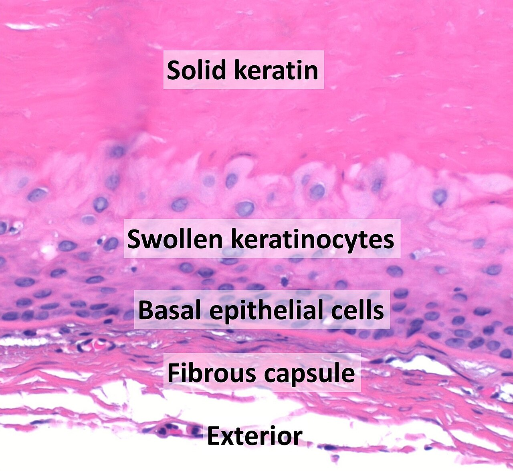
Kedysi sa za nepravé nádory považovali zápalový pseudotumor (ložisko myofibroblastov so zápalovým infiltrátom v pľúcach alebo v čreve) a fibromatózy (uzly z väziva, napríklad v brušnej stene alebo v dlani). Dnes vieme, že sú klonálne a nesú zmenu génu: zápalový pseudotumor je zápalový myofibroblastový nádor, často s prestavbou génu ALK, a hlboká fibromatóza (desmoid) má v asi 85 % mutáciu génu β-katenínu. WHO ich radí medzi intermediárne nádory: desmoid medzi lokálne agresívne (prerastá do okolia a recidivuje, ale nemetastázuje), zápalový myofibroblastový nádor medzi zriedka metastázujúce (→ 10.4.2, → 11.5.2 Medzi benígnym a malígnym). Aj pri časti hamartómov (napríklad pľúcnych) sa našla klonalita, takže hranica medzi hamartómom a nezhubným nádorom je dnes neostrá.
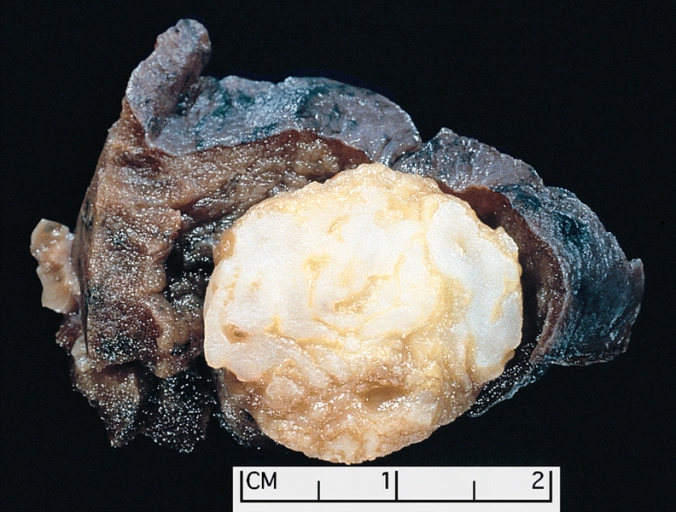
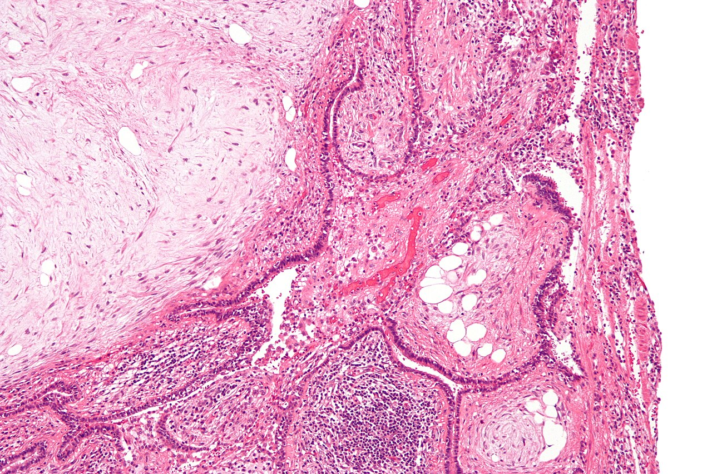
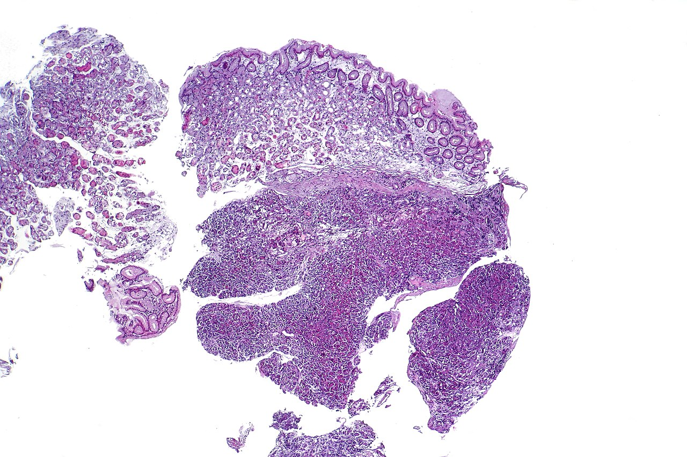
Hamarcia a choristia. Uvádza sa, že poruchu vývoja tkaniva treba pomenovať zvlášť od ložiska, ktoré z nej vznikne: hamarcia je chybné zmiešanie tkanív v orgáne, hamartóm hmota z nej; choristia je tkanivo na nesprávnom mieste, choristóm hmota z neho. Pojmy hamartóm a choristóm sú doložené, rozlíšenie „-ia“ × „-óm“ nie.
Ateróm. Tradične sa ním označuje retenčná cysta mazovej žľazy v koži, s mazom a keratínom. Dnes sa za takéto cysty považujú najmä epidermoidné a trichilemové cysty s keratínovým obsahom; či ide o upchatú mazovú žľazu, sa nepodarilo doložiť. Pozor na zámenu: v cievach znamená ateróm aterosklerotický plát.
10.4Ako sa nádor pomenuje: z čoho vyrástol a z čoho je
Nádory sa pomenúvajú podľa histogenézy – tkaniva, z ktorého vyrástli, a ktoré ich bunky do istej miery napodobňujú. Určiť histogenézu znamená nádor typizovať (angl. typing); názov potom spolu so správaním (benígny × malígny, → 11.5 Dignita: benígny, malígny a čo leží medzi nimi) tvorí diagnózu podľa platnej klasifikácie WHO. Sekcia ide od toho, na čom názov stojí – zloženia nádoru (→ 10.4.1) –, cez pravidlá pomenovania nádorov z jedného tkaniva (→ 10.4.2) a výnimky z nich (→ 10.4.3) po nádory z viacerých tkanív (→ 10.4.4) a nádory, ktoré časom zmenia povahu (→ 10.4.5).
Názov = tkanivo pôvodu + správanie. Epitel: papilóm, adenóm × karcinóm, adenokarcinóm. Mezenchým: -óm × -sarkóm. Embryonálne tkanivo: -blastóm. Názov určuje parenchým – nádorové bunky; stróma je len lešenie.
10.4.1Parenchým a stróma
Každý nádor má dve zložky. Parenchým tvoria samotné nádorové bunky; ich vzhľad určuje typ nádoru a ich vlastnosti jeho správanie. Stróma je nenádorové väzivo s krvnými a lymfatickými cievami a s imunitnými bunkami: nádor si ju „objedná“ od hostiteľa signálmi, ktorými vyvolá rast ciev (→ 5.3 Granulačné tkanivo – motor reparácie) a tvorbu väziva. Stróma nádor nesie a vyživuje – bez vlastných ciev ďalej nerastie –, ale nie je pasívna: fibroblasty a makrofágy v nej môžu jeho rast podporiť a lymfocyty brzdiť (→ 10.6.3).
Podľa toho, či sa obe zložky dajú od seba odlíšiť, sa tradične rozlišujú nádory organoidné – parenchým a stróma sú oddelené, nádor pripomína stavbu orgánu (epitelové nádory: hniezda alebo žľazky nádorových buniek obklopené väzivom) – a histoidné, v ktorých nádorové bunky a medzibunková hmota tvoria jednotné tkanivo bez zreteľnej strómy (mezenchýmové nádory, napríklad lipóm alebo fibróm, ktorého bunky samé tvoria kolagén).
- MA: množstvo strómy určuje konzistenciu. Nádor s hojným kolagénom v stróme je tuhý až tvrdý a na reze belavý (tradične „scirózny“ – napríklad difúzny karcinóm žalúdka, ktorý stenu premení na tuhú rúru) – lebo kolagén je tuhý a málo prekrvený; nádor s chudobnou strómou je mäkký, „medulárny“, na reze sivoružový a ľahko odumiera v strede, lebo cievy nestačia.
- MI: malé zväčšenie – v organoidnom nádore hniezda, trámce alebo žľazky nádorových buniek a medzi nimi pruhy väziva s cievami; desmoplázia = reaktívne bohaté, bunkovo chudobné väzivo okolo invazívneho karcinómu; v stróme lymfocyty a makrofágy.
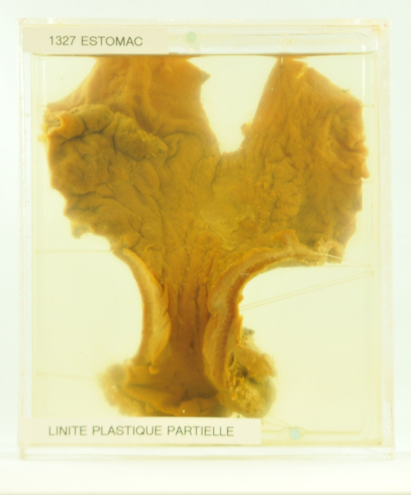
10.4.2Nádory z jedného tkaniva
Nádor z jediného tkaniva je pravidlom. O názve rozhodujú dve otázky. Prvá: z akého tkaniva nádorové bunky pochádzajú – podľa nej má tabuľka šesť riadkov. Druhá: správajú sa nezhubne, alebo zhubne – podľa nej dostane nádor v každom riadku inú koncovku alebo iné slovo (adenóm × adenokarcinóm, lipóm × liposarkóm). Zárodočný list o názve nerozhoduje – epitel môže byť ektodermového, endodermového aj mezodermového pôvodu (pokožka, sliznica čreva, epitel obličkových tubulov), a predsa sa všetky jeho nádory volajú karcinómy. Rozhoduje, aké tkanivo bunky tvoria:
| Odkiaľ bunky pochádzajú | Nezhubný | Zhubný | Napríklad |
|---|---|---|---|
| krycí epitel – dlaždicový (skvamózny) alebo urotel (prechodný epitel) | papilóm | karcinóm | papilóm hrtana; dlaždicový karcinóm kože |
| žľazový epitel | adenóm | adenokarcinóm | adenóm a adenokarcinóm hrubého čreva |
| mezenchým – väzivo, tuk, svaly, chrupka, kosť, cievy | koncovka -óm | koncovka -sarkóm | lipóm a liposarkóm; leiomyóm a leiomyosarkóm; hemangióm a angiosarkóm |
| bunky krvi a lymfatických orgánov | neexistuje | leukémia, lymfóm, myelóm | vlastné názvoslovie (→ kap. 16) |
| neuroektoderm – nervy a ich obaly, melanocyty | napr. névus, schwannóm, neurofibróm | napr. melanóm, neuroblastóm | gliálne a neuroendokrinné nádory → 10.4.3 |
| zárodočné bunky, mezotel, trofoblast | zrelý teratóm, mola hydatidosa | seminóm, nezrelý teratóm, mezotelióm, choriokarcinóm | → 10.4.4 |
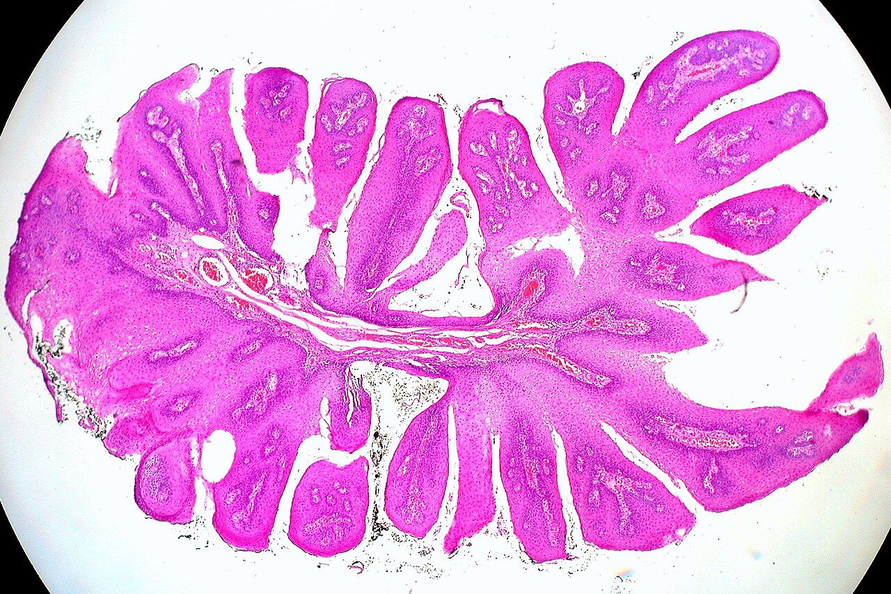
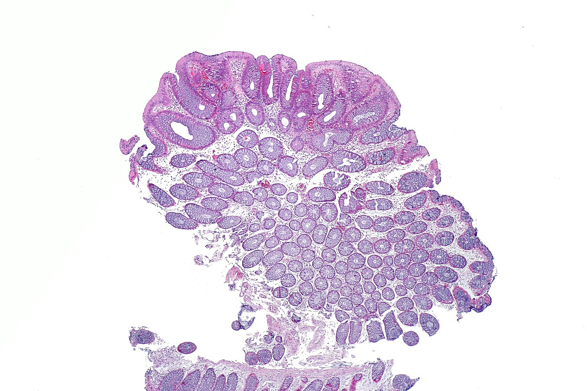
Pravidlá majú výnimky, ktoré treba poznať:
- Karcinómy niektorých žľazových orgánov sa nevolajú adenokarcinómy, hoci sú žľazového pôvodu: hepatocelulárny karcinóm (pečeň), karcinóm z obličkových buniek, karcinómy štítnej žľazy a prsníka. Ich nezhubné náprotivky sa však adenómy volajú (→ 12.7.4 Adenokarcinómy s vlastným menom).
- Intermediárne nádory stoja medzi benígnymi a malígnymi a WHO ich vyčleňuje hlavne medzi mäkkými tkanivami: lokálne agresívne (prerastajú do okolia a recidivujú, ale nemetastázujú – desmoid) a zriedka metastázujúce. Pri epitelových nádoroch zodpovedajú „hraničným“ nádorom (angl. borderline, napríklad vo vaječníku).
- Krvotvorné a lymfatické nádory majú vlastné názvoslovie: leukémia = nádor rozptýlený v kostnej dreni a krvi, lymfóm = nádor tvoriaci tuhé ložiská v uzlinách a iných orgánoch. Benígny proťajšok nemajú – líšia sa len tým, ako rýchlo postupujú.
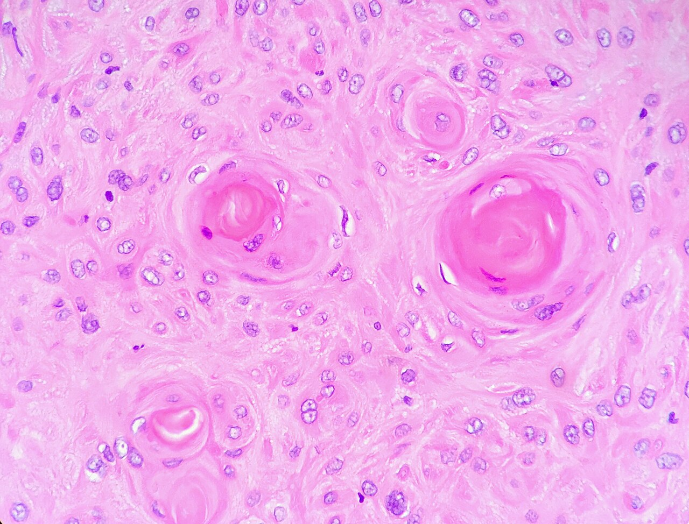
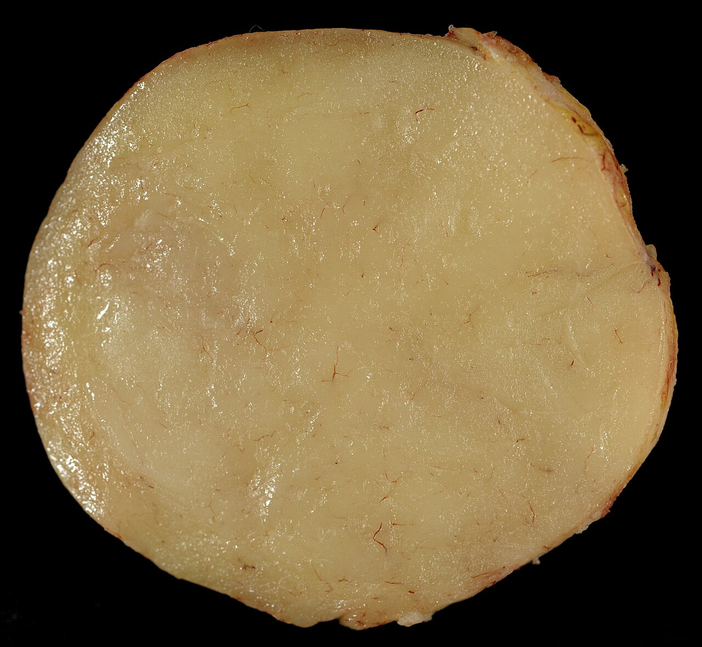
- MA: nádor z tuku je žltý a mastný (lipóm), z hladkého svalu belavý, tuhý, s vírivou kresbou na reze (leiomyóm), z chrupky modrobiely a sklovitý – farbu a konzistenciu dáva medzibunková hmota, ktorú nádorové bunky po vzore pôvodného tkaniva tvoria.
- MI: epitelové bunky držia pohromade a tvoria hniezda, žľazky alebo vrstvy; dlaždicový karcinóm tvorí rohovinu (rohové perly – koncentricky vrstvený keratín v strede nádorových čapov), adenokarcinóm žľazky a hlien; mezenchýmové bunky ležia jednotlivo, často vretenovité, medzi vláknami.
- Čím viac nádorové bunky napodobnia pôvodné tkanivo, tým sú diferencovanejšie; nádor, ktorý svoj pôvod pod mikroskopom už neprezradí, je nediferencovaný a pôvod sa určí imunohistochémiou (→ 0.7 Imunohistochémia).
10.4.3Názvy, ktoré klamú
Koncovka -óm sa ustálila pre nezhubné nádory, ale niekoľko starých názvov toto pravidlo porušuje a jeden názov sa nedávno zmenil. Sú to práve tie, ktoré študent najľahšie zamení:
- malígne napriek koncovke -óm: lymfóm, melanóm (z melanocytov), seminóm (zo zárodočných buniek semenníka), mezotelióm (z mezotelu pleury alebo pobrušnice) – všetky sú zhubné; benígne nádory mezotelu sú zriedkavé a majú vlastné mená,
- blastóm (gr. blastos „zárodok“) je nádor z buniek, ktoré pripomínajú embryonálne, nevyzreté tkanivo orgánu: nefroblastóm (Wilmsov nádor obličky, gén WT1), hepatoblastóm, neuroblastóm (zo sympatikového nervstva, najčastejšie v dreni nadobličky), medulloblastóm (mozoček), retinoblastóm (sietnica). Sú to väčšinou zhubné nádory detského veku. Koncovka sama však o povahe nádoru nerozhoduje – rozhoduje typ podľa WHO, ktorý sa niekedy volá „-blastóm“ len z tradície,
- nádory z malých modrých buniek – nie typ, ale vzhľad: bunky s tmavým jadrom a takmer bez cytoplazmy sa v hematoxyline a eozíne farbia ako „malé modré bodky“. Majú ho mnohé blastómy (neuroblastóm, nefroblastóm), ale aj niektoré sarkómy detí, lymfómy a jeden z najzhubnejších nádorov dospelých, malobunkový karcinóm pľúc; pod obyčajným mikroskopom sa od seba nerozlíšia a typ určí až imunohistochémia a genetika.
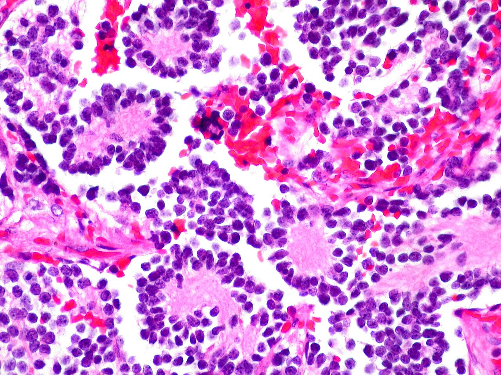
Kedysi sa nádory z rozptýlených neuroendokrinných buniek tráviacej rúry a pľúc nazývali karcinoidy („podobné karcinómu“, lebo rastú pomaly). Dnes spoločná klasifikácia WHO a IARC (od roku 2018) delí všetky neuroendokrinné neoplázie na dobre diferencované neuroendokrinné nádory so stupňom G1–G3 podľa počtu mitóz a podielu deliacich sa buniek (index Ki-67) a na zle diferencované neuroendokrinné karcinómy. Pojem karcinoid ostal len v pľúcach (typický a atypický karcinoid) a v názve karcinoidového syndrómu.
Nádory bez benígneho proťajška. Krvotvorné a lymfatické nádory sú všetky zhubné. Gliálne nádory mozgu WHO neoznačuje ako benígne či malígne, ale stupňom 1–4: aj pomaly rastúci glióm v uzavretej lebke tlačí na mozog a infiltruje ho, takže ohrozuje život, hoci by sa inde správal nezhubne.
10.4.4Nádory z viacerých tkanív: zmiešané nádory a teratóm
Niektoré nádory obsahujú dva alebo viac druhov nádorových tkanív. Delia sa podľa toho, z koľkých zárodočných vrstiev pochádzajú: z jednej vrstvy sú zmiešané nádory, zo všetkých troch teratóm.
Zmiešané nádory majú dve nádorové zložky – napríklad epitelovú a mezenchýmovú (fibroadenóm prsníka) alebo dve mezenchýmové (angiolipóm z ciev a tuku) – a názov skladajú z oboch. Ich povaha sa určuje podľa každej zložky zvlášť:
| Zložky | Epitelová benígna | Epitelová malígna |
|---|---|---|
| mezenchýmová benígna | fibroadenóm (prsník) | — |
| mezenchýmová malígna | adenosarkóm (maternica: malígna stróma, nezhubné žľazky) | karcinosarkóm (pozri revíziu) |
Ako zmiešaný sa môže nádor iba tváriť. Pleomorfný adenóm slinnej žľazy, najčastejší nádor slinných žliaz, sa tradične nazýva „zmiešaný nádor“, lebo obsahuje epitelové žľazky aj chrupke podobnú hmotu. V skutočnosti ho tvoria dve zložky epitelu žľazy – žľazové a myoepitelové bunky – a hmota podobná hlienu a chrupke vzniká medzi myoepitelovými bunkami; mezenchýmový nádor v ňom nie je.
Kedysi sa karcinosarkóm maternice (malígny zmiešaný müllerovský nádor) radil k zmiešaným nádorom s dvoma samostatnými zhubnými zložkami. Dnes sa vie, že obe zložky pochádzajú z jedného klonu epitelových buniek, z ktorých časť sa premenila na mezenchýmové („sarkómové“). Ide teda o metaplastický karcinóm a lieči sa ako vysokomalígny karcinóm.
Adenoakantóm a adenoskvamózny karcinóm. Uvádza sa, že adenokarcinóm s nezhubne vyzerajúcou dlaždicovou zložkou sa nazýval adenoakantóm, a ak je zhubná aj dlaždicová zložka, ide o adenoskvamózny karcinóm. Adenoskvamózny karcinóm ako typ je doložený (napríklad v pľúcach a pankrease); názov adenoakantóm sa v súčasnej klasifikácii nepoužíva – dlaždicová zložka sa uvádza ako „dlaždicová diferenciácia“ adenokarcinómu.
Teratóm (gr. teras „obluda“) vyrastá zo zárodočných buniek, ktoré si zachovali schopnosť stať sa ktoroukoľvek bunkou tela (totipotencia). Preto obsahuje tkanivá všetkých troch zárodočných vrstiev – kožu s vlasmi a mazovými žľazami, chrupku, kosť, zuby, nervové tkanivo, črevnú sliznicu – v neusporiadanej zmesi. Vzniká v gonádach alebo v zvyškoch zárodočných buniek, ktoré pri vývoji zablúdili na ceste do gonád pozdĺž strednej čiary tela (predné mediastínum, oblasť kostrče).
- MA: zrelý cystický teratóm vaječníka („dermoidná cysta“) je cysta vyplnená mazom a chumáčmi vlasov, v stene býva hrbolček so zubami alebo kosťou – lebo kožné adnexy zrelého tkaniva v ňom pracujú ako v koži.
- MI: zrelý teratóm – len zrelé tkanivá (dlaždicový epitel, mazové žľazy, chrupka, respiračný epitel); nezrelý teratóm obsahuje aj embryonálne tkanivo, najčastejšie nezrelý neuroektoderm (ružice a trubice tmavých buniek).
- Zrelý teratóm vaječníka je benígny a rastie pomaly (asi 2 mm za rok); nezrelý je malígny a jeho stupeň určuje množstvo nezrelého neuroektodermu. Teratóm semenníka po puberte vzniká z prekurzora zárodočných buniek a môže metastázovať aj vtedy, keď je zložený zo zrelých tkanív.
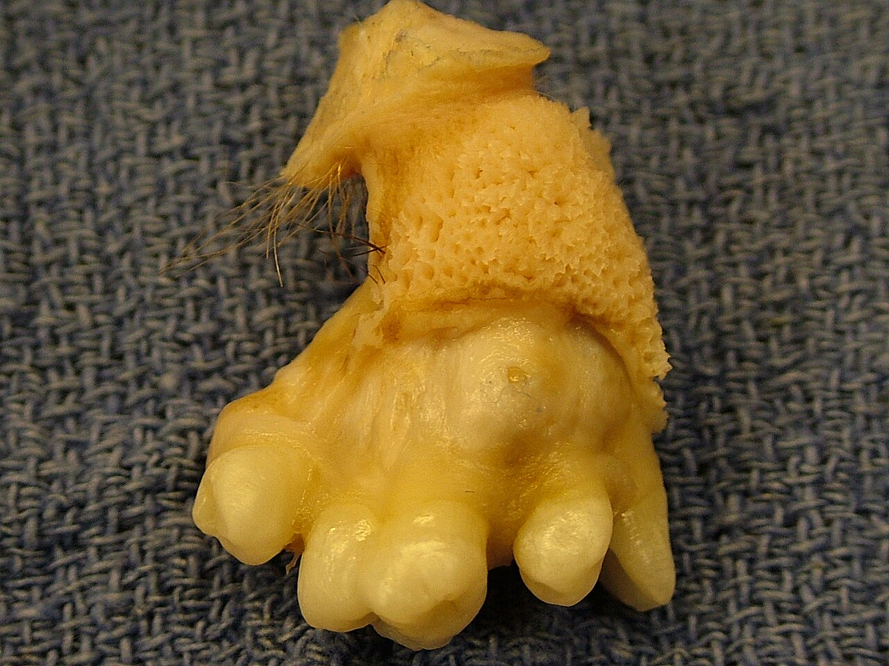
Do skupiny nádorov zo zárodočných buniek, z mezotelu a z trofoblastu patria aj mezotelióm, nádor z mezotelu pleury, osrdcovníka alebo pobrušnice úzko spojený s azbestom (→ 10.7.1), a nádory trofoblastu – zo štruktúr, z ktorých sa vyvíja placenta: mola hydatidosa (hroznovito napuchnuté klky; úplná mola má len otcovskú DNA) a zhubný choriokarcinóm. Podrobne ich preberá špeciálna patológia.
10.4.5Keď nádor zmení správanie: transformácia a vyzrievanie
Klonálna evolúcia (→ 10.2.3) znamená, že nádor nie je v čase stály. Podľa smeru zmeny sa rozlišujú tri deje:
- malígna transformácia (malígny zvrat) – nezhubný nádor dá vznik subklonu, ktorý už má vlastnosti zhubného. Najčastejšie a najlepšie preskúmaný je zvrat adenómu hrubého čreva na adenokarcinóm (→ 10.6.1); vzácny je v zrelom teratóme vaječníka (asi 1–3 %, najčastejšie dlaždicový karcinóm) a v pleomorfnom adenóme slinnej žľazy, kde dlho známy uzol náhle začne rásť. Prevažná väčšina nezhubných nádorov sa však nezvrhne nikdy – nesie málo mutácií a jej genóm je stabilný. Zhubné nádory častejšie vznikajú priamo (de novo) alebo v prekanceróze (→ 15 Prekancerózy),
- vysokomalígna transformácia (angl. high-grade transformation) – v nízko malígnom nádore prevládne subklon, ktorý rastie oveľa rýchlejšie; klinicky sa to prejaví náhlym zrýchlením rastu po rokoch pokoja,
- vyzrievanie – zriedkavý opačný smer: zhubný nádor dozreje na nezhubný. Typický je neuroblastóm, ktorý môže (samovoľne alebo po liečbe) dozrieť cez ganglioneuroblastóm na ganglioneuróm zo zrelých gangliových buniek; u dojčiat neuroblastóm často samovoľne ustúpi.
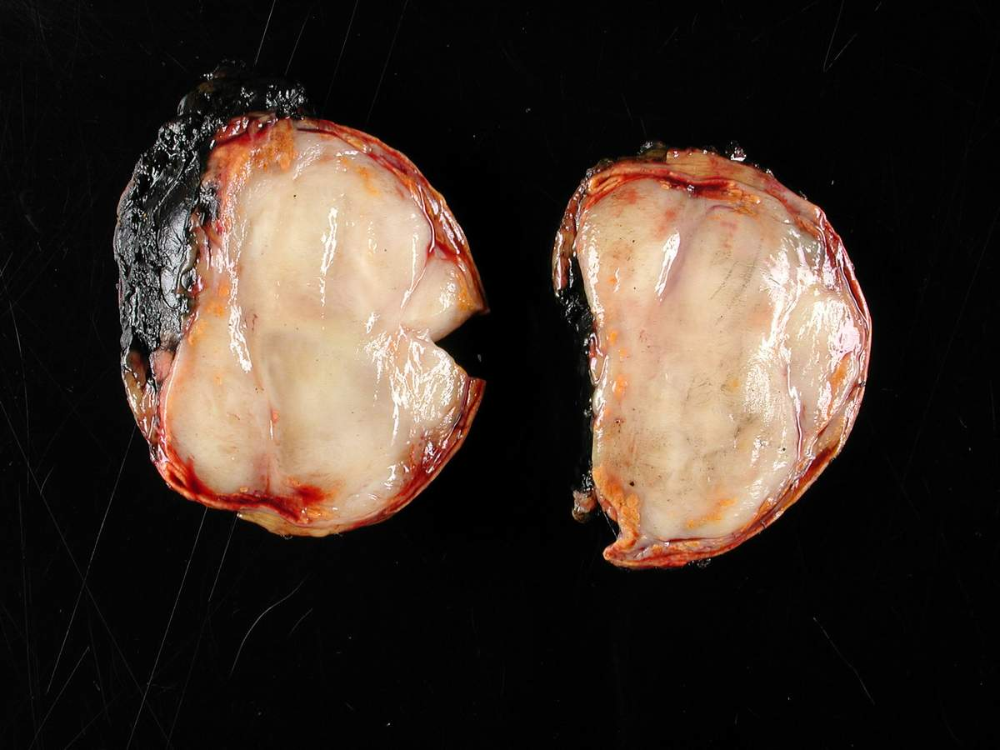
Kedy transformácia zmení liečbu. Adenóm hrubého čreva sa odstraňuje pri kolonoskopii práve preto, že je predstupňom karcinómu – odstránený polyp sa nezvrhne. Pri nízko malígnom nádore, ktorý náhle zrýchli rast, patológ v novej biopsii hľadá vysokomalígnu zložku; jej nález mení diagnózu aj liečbu.
10.5Čo sa v bunke pokazí: gény nádoru
Delenie, smrť a opravy bunky riadia gény a ich bielkoviny. Na vzniku nádoru sa podieľajú tri skupiny génov, ktoré sa líšia tým, čo bunke robia normálne: gény, ktoré delenie spúšťajú (protoonkogény), gény, ktoré delenie zastavujú alebo poškodenú bunku zabijú (supresorové gény), a gény, ktoré opravujú DNA (opravné gény). Nádor vznikne, keď sa prvé zapnú natrvalo a druhé a tretie vypnú. Sekcia najprv ukáže, akými zmenami sa to v DNA stane (→ 10.5.1), a potom každú skupinu génov (→ 10.5.2, → 10.5.3, → 10.5.4).
Nádor = zapnuté onkogény (stačí jedna alela, dominantne) + vypnuté supresory (treba obe alely – dva zásahy) + vypnuté opravy DNA (nestabilita genómu ⟳). Zmena môže byť genetická (mutácia, translokácia, amplifikácia) alebo epigenetická (metylácia).
10.5.1Druhy zmien DNA
Zmeny, ktoré nádor poháňajú, sa delia podľa toho, či menia poradie nukleotidov v DNA:
- genetické zmeny – mení sa samotná DNA:
- bodová mutácia – zámena jedného nukleotidu; ak zmení aminokyselinu, bielkovina môže byť natrvalo aktívna (aktivačná mutácia, typická pre onkogény) alebo nefunkčná (inaktivačná, napríklad predčasný stop kodón – typická pre supresory),
- chromozómové aberácie – translokácia (úsek chromozómu sa presunie na iný), delécia (úsek sa stratí), inzercia (úsek sa vloží); translokácia môže gén postaviť pod cudzí silný promótor alebo spojiť dva gény do nového fúzneho génu,
- amplifikácia – gén sa zmnoží na desiatky až stovky kópií a bunka vyrába nadbytok inak normálnej bielkoviny,
- epigenetické zmeny – poradie nukleotidov je normálne, ale gén sa „vypne“ alebo „zapne“: najčastejšie metyláciou úsekov bohatých na cytozín a guanín v promótore (metylovaný promótor sa neprepisuje), ďalej úpravou histónov, okolo ktorých je DNA navinutá, a malými regulačnými RNA (mikroRNA), ktoré brzdia prepis bielkovín. Gén sa tak dá umlčať bez toho, aby sa v ňom zmenil čo i len jeden nukleotid. Príklad z praxe: keď v nededičnom nádore čreva chýba bielkovina opravného génu MLH1, príčinou býva práve metylovaný promótor, nie mutácia (→ 10.5.4).
Zmeny vznikajú najčastejšie samovoľne, chybou pri kopírovaní DNA pri delení, a ďalej účinkom kancerogénov a voľných kyslíkových radikálov (→ 10.7). Väčšina mutácií nádor nespôsobí: buď sa opravia, buď nezasiahnu dôležitý gén, buď bunku zabijú alebo ju odstráni imunita – mutagenita teda ešte nie je kancerogenita. Podľa toho, v ktorej bunke zmena vznikne, sa delia na:
- somatické – v jednej bunke tela počas života; nádor je sporadický a nededí sa; takých je veľká väčšina, asi 90–95 % nádorov,
- zárodočné (germinálne, dedičné – hereditárne) – zdedené od rodiča, sú v každej bunke tela; dávajú dedičnú predispozíciu k nádorom – asi 5–10 % všetkých nádorov (→ 10.7.4).
10.5.2Onkogény: gény, ktoré delenie spúšťajú
Protoonkogén je normálny gén, ktorého bielkovina posúva bunku k deleniu – je článkom reťaze, ktorou sa signál z rastového faktora dostane od povrchu bunky do jadra a spustí bunkový cyklus (→ 5.2 Kto sa vie obnoviť: bunkový cyklus a kostra tkaniva). Keď sa protoonkogén zmení tak, že jeho bielkovina je aktívna stále alebo vo veľkom nadbytku, stane sa z neho onkogén: signál k deleniu prichádza bez ohľadu na to, či rastový faktor je prítomný. Gény nádorov sa najprv objavili vo vírusoch – prvý, src, v Rousovom sarkómovom víruse, ktorý vyvoláva nádory u kurčiat –, a preto sa vírusové onkogény značia v-onc a bunkové c-onc. V 70. rokoch sa ukázalo, že vírus si gén kedysi „požičal“ od bunky: každá normálna bunka má jeho predlohu.
Onkogén pôsobí dominantne – stačí zmena jednej z dvoch alel, lebo jedna stále zapnutá bielkovina vysiela signál, ktorý druhá, normálna, nevypne.
- Bodová mutácia → bielkovina sa nedá vypnúť. Prototyp RAS: normálne je aktívny, kým na ňom sedí GTP, a sám sa vypne, keď GTP rozštiepi na GDP; aktivačná mutácia štiepenie zastaví → RAS ostáva zapnutý. Mutáciu RAS má asi tretina všetkých nádorov (hrubé črevo, pankreas, pľúca).
- Amplifikácia → nadbytok normálnej bielkoviny: HER2 v asi 15 % karcinómov prsníka, NMYC v asi štvrtine neuroblastómov.
- Translokácia pod silný promótor → normálna bielkovina sa tvorí v nesprávnom čase a množstve: MYC pri Burkittovom lymfóme sa translokáciou t(8;14) dostane k promótoru génu ťažkého reťazca imunoglobulínu, ktorý je v B-lymfocyte stále aktívny.
- Translokácia s fúznym génom → vzniká nová bielkovina so stálou aktivitou: BCR::ABL1 pri chronickej myeloidovej leukémii (pozri nižšie).
- Vzácnejšie inzercia: retrovírus sa vloží vedľa protoonkogénu a jeho silný promótor gén zapne.
Onkogény sa podľa toho, ktorý článok signálnej reťaze ich bielkovina tvorí, delia do skupín (Obr. 10.14):
| Článok reťaze | Normálna úloha | Príklady onkogénov | Nádor (príklad) |
|---|---|---|---|
| rastový faktor | signál pre susednú bunku | SIS (PDGF-B), TGF-α | glioblastóm a niektoré sarkómy si tvoria vlastný faktor aj receptor – autokrinná slučka |
| receptor rastového faktora | na povrchu bunky zachytí faktor a zapne svoju kinázu | HER2 (amplifikácia), EGFR (mutácia), KIT | HER2 – časť karcinómov prsníka a žalúdka; EGFR – časť adenokarcinómov pľúc; KIT – stromálny nádor tráviacej rúry |
| prevodník signálu v cytoplazme | nesie signál od receptora k jadru (dráha PI3K → AKT → mTOR a dráha MAP kináz) | KRAS, BRAF, fúzne BCR::ABL1 a ALK | KRAS – črevo a pankreas; BRAF – melanóm; BCR::ABL1 – CML |
| jadrový transkripčný faktor | zapne gény pre delenie | MYC, NMYC, FOS, JUN | Burkittov lymfóm, neuroblastóm |
| regulátor bunkového cyklu | posunie bunku cez kontrolný bod G1/S | cyklín D1 (CCND1), CDK4 | lymfóm z plášťových buniek, melanóm |
| ochrana pred smrťou, vyradenie supresora | chráni bunku pred apoptózou, odbúrava p53 | BCL2, BCL-XL, MDM2; vírusové E6 a E7 | folikulový lymfóm (BCL2 pri t(14;18)); karcinómy z HPV (E6, E7) |
Dráha, ktorou ide signál z receptora k jadru, je RAS → RAF → MEK → ERK (kaskáda MAP kináz). MET do nej nepatrí – je to receptor pre rastový faktor hepatocytov (HGF), teda článok o krok vyššie. Skratky MEK a MET sa ľahko zamenia.
Prototypom nádoru, ktorý poháňa jeden onkogén, je chronická myeloidová leukémia (CML): v kmeňovej krvotvornej bunke sa vymenia konce chromozómov 9 a 22 – t(9;22) – a skrátený chromozóm 22 sa nazýva Filadelfský chromozóm. Spojením génov BCR a ABL1 vznikne fúzny gén, ktorého bielkovina je tyrozínkináza, ktorá sa nedá vypnúť. Na tomto nádore sa ukázalo, že keď sa poznaný onkogén zablokuje, nádor ustúpi.
t(9;22) v kmeňovej bunke drene → fúzny gén BCR::ABL1 → tyrozínkináza ABL stále aktívna (BCR jej odstráni samoregulačnú časť) → trvalo zapnuté dráhy RAS–MAPK, JAK–STAT a PI3K–AKT → granulocyty sa delia a ich prekurzory unikajú apoptóze → dreň a krv preplnené granulocytmi všetkých štádií zrenia
Dôkaz BCR::ABL1. Cytogenetika (karyotyp) ukáže Filadelfský chromozóm, FISH spojené signály oboch génov, kvantitatívna PCR množstvo fúzneho prepisu – podľa jeho poklesu sa hodnotí odpoveď na liečbu.
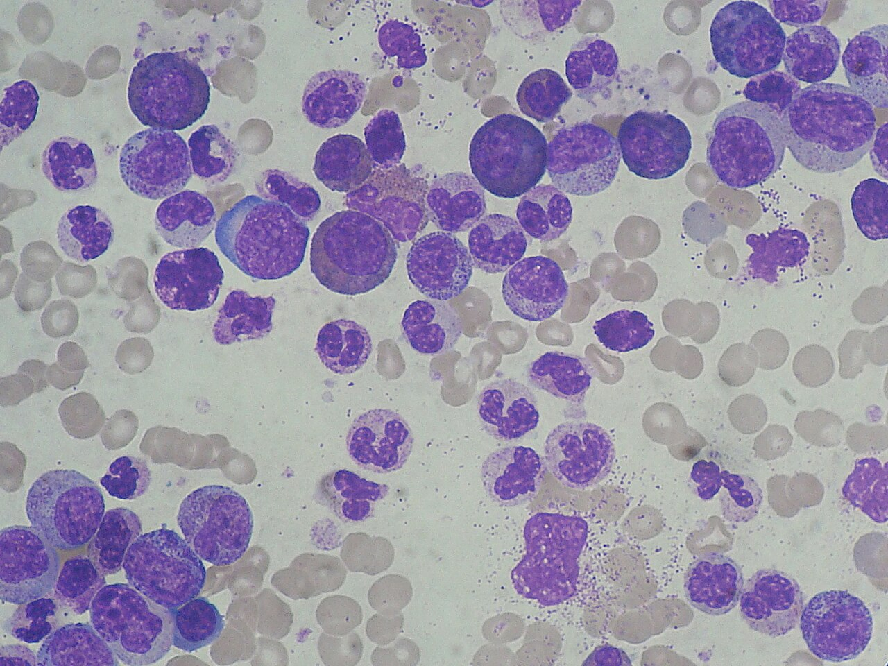
Imatinib – liek na jeden onkogén. Inhibítor tyrozínkinázy BCR::ABL1 (imatinib, od prelomu tisícročí) zmenil CML zo smrteľnej choroby na dlhodobo kontrolovanú – priamy dôkaz, že nádor „závisí“ od svojho onkogénu. Rovnaká logika riadi cielenú liečbu dnes: patológ v biopsii hľadá HER2 (amplifikácia → protilátka trastuzumab), EGFR a ALK v karcinóme pľúc, BRAF v melanóme (→ 0.8).
Prečo sa pred liečbou vyšetruje RAS. Karcinóm hrubého čreva sa dá liečiť protilátkou proti receptoru EGFR – ale len vtedy, keď je RAS bez mutácie. Mutovaný RAS leží v reťazi až za receptorom a vysiela signál sám, takže zablokovanie receptora by nepomohlo. Správa patológa preto obsahuje „KRAS/NRAS – bez mutácie / mutácia v kodóne…“.
10.5.3Supresorové gény: gény, ktoré delenie zastavujú
Supresorové gény (tumor-supresorové, nádorové supresory) kódujú bielkoviny, ktoré delenie bunky zastavia, keď nie je potrebné alebo keď je DNA poškodená, prípadne poškodenú bunku zabijú. Nádor z nich nevzniká zapnutím, ale stratou funkcie – a keďže na brzdenie stačí aj jedna funkčná kópia, musia sa vyradiť obe alely. Supresorové gény sú preto na úrovni bunky recesívne.
Z toho vyplýva hypotéza dvoch zásahov, ktorú A. G. Knudson v roku 1971 odvodil z detí s retinoblastómom – zhubným nádorom sietnice z génu RB1 (Obr. 10.16):
- Sporadická forma: obe alely musia byť zasiahnuté náhodne v tej istej bunke sietnice → udalosť vzácna → jeden nádor v jednom oku, v neskoršom veku (asi 55–60 % prípadov).
- Dedičná forma: jedna mutovaná alela je zdedená a je v každej bunke → stačí jeden náhodný zásah kdekoľvek → nádory v oboch očiach, viacpočetné, skôr; neskôr aj iné nádory, najmä osteosarkóm (asi 40–45 %).
- Druhý zásah je často strata heterozygozity (LOH): bunka prehrá zdravú alelu deléciou alebo chybou pri delení chromozómov.
- Preto sa predispozícia dedí dominantne (stačí jedna zdedená alela), hoci samotný gén v bunke pôsobí recesívne.
Supresorové gény sa delia podľa toho, čo strážia: „vrátnici“ (angl. gatekeepers) priamo bránia deleniu alebo spúšťajú smrť (RB, p53, APC), „správcovia“ (angl. caretakers) udržiavajú celistvosť DNA (opravné gény, → 10.5.4). Dva najdôležitejšie supresory, RB a p53, riadia ten istý krok bunkového cyklu – prechod z fázy G1 do fázy S, v ktorom sa rozhodne, či bunka začne kopírovať DNA a pôjde do delenia:
- RB – hlavná brzda vstupu do S-fázy: kým je nefosforylovaný, viaže transkripčný faktor E2F a bunka sa nezačne pripravovať na kopírovanie DNA. Rastový signál cez cyklín D a CDK4 RB fosforyluje, E2F sa uvoľní a cyklus beží. Bez RB beží vždy.
- p53 (gén TP53 na 17. chromozóme) – „strážca genómu“: pri poškodení DNA, hypoxii alebo nadmernom signáli z onkogénu sa v bunke nahromadí a zapne gén p21, ktorý cyklus zastaví na kontrolnom bode G1/S. Bunka dostane čas na opravu; ak sa poškodenie opraviť nedá, p53 spustí trvalé zastavenie delenia (senescenciu) alebo apoptózu (→ 1.4 Apoptóza). Bez p53 bunka s poškodenou DNA neprestane deliť ani nezomrie – a chyby odovzdá potomkom. TP53 je najčastejšie zmenený gén v nádoroch – podľa rôznych odhadov v polovici až 70 % zhubných nádorov.
Prečo slony nemajú rakovinu. Väčšie a dlhšie žijúce zviera má viac buniek a viac delení, teda by malo mať viac nádorov – no nemá (Petov paradox). Slon má 20 kópií génu TP53 (človek jednu v každej sade chromozómov) a znovu zapnutý gén LIF6 – „zombie gén“, ktorý je u človeka nefunkčným pseudogénom –, ktorý p53 pri poškodení DNA aktivuje a ktorý bunku pošle do apoptózy. Na rakovinu zomiera menej ako 5 % slonov, ľudí 11–25 %.
Ďalšie supresorové gény a nádory, ktoré ich strata spôsobuje (pri zárodočnej mutácii ako dedičný syndróm):
| Gén | Normálna úloha bielkoviny | Sporadické nádory | Dedičný syndróm |
|---|---|---|---|
| TP53 | zastaví cyklus, spustí apoptózu | väčšina karcinómov | Li-Fraumeniho: sarkómy, prsník, mozog, kôra nadobličky, leukémie; polovica nádorov pred 40. rokom |
| RB1 | drží transkripčný faktor E2F, kým bunka nedostane signál na delenie | vypnutý v mnohých nádoroch (aj vírusovou bielkovinou E7) | dedičný retinoblastóm, neskôr osteosarkóm (Obr. 10.16) |
| APC | patrí do bielkovinového komplexu, ktorý β-katenín priebežne likviduje; bez neho β-katenín zapína gény delenia | prvý zásah vo väčšine nádorov hrubého čreva | familiárna adenomatózna polypóza (FAP): hrubé črevo posiate stovkami až tisíckami adenómov už u mladých ľudí |
| NF1 | vypína RAS (urýchli štiepenie GTP) | — | neurofibromatóza 1. typu: neurofibrómy, zhubný nádor z obalov nervu, feochromocytóm, gliómy |
| NF2 | sprostredkuje kontaktnú inhibíciu | schwannómy, meningiómy | neurofibromatóza 2. typu: obojstranné schwannómy sluchového nervu, meningiómy, ependymómy |
| WT1 | riadi vývin obličky a gonád | Wilmsov nádor | syndróm WAGR (Wilmsov nádor, aniridia, vývojové chyby močovopohlavné, mentálne postihnutie) |
| PTEN | brzdí dráhu PI3K–AKT | glioblastóm, karcinóm endometria | Cowdenovej syndróm: hamartómy, karcinóm prsníka, štítnej žľazy |
| CDKN2A (p16) | brzdí CDK4 | väčšina karcinómov pankreasu, melanóm | familiárny melanóm |
| BRCA1, BRCA2 | oprava zlomov oboch vlákien DNA | — | dedičný karcinóm prsníka a vaječníka (→ 10.5.4) |

Rozdiel medzi oboma skupinami génov zhŕňa tabuľka:
| Onkogén | Supresorový gén | |
|---|---|---|
| normálna úloha | spúšťa delenie a prežitie | delenie zastavuje, poškodenú bunku zabije |
| zmena v nádore | zisk funkcie (zapnutie) | strata funkcie (vypnutie) |
| koľko alel treba zmeniť | jednu – dominantne | obe – recesívne (dva zásahy) |
| typická zmena | aktivačná bodová mutácia, amplifikácia, translokácia | inaktivačná mutácia, delécia, metylácia promótora |
| dedičné syndrómy | zriedkavé (napr. RET – MEN 2) | časté (TP53, RB1, APC, BRCA) |
| cielená liečba | dá sa zablokovať (inhibítor kinázy, protilátka) | stratenú funkciu sa vrátiť nedá – hľadajú sa slabiny, ktoré strata vytvorí |
10.5.4Opravné gény a nestabilita genómu
DNA sa poškodzuje stále – pri každom kopírovaní sa zabudujú chybné nukleotidy a z prostredia na ňu pôsobia UV žiarenie, chemikálie a radikály. Bunka má preto niekoľko opravných systémov; delia sa podľa toho, aké poškodenie opravujú, a strata každého z nich vedie k inému dedičnému syndrómu:
| Opravný systém | Čo opravuje | Gény | Syndróm pri zárodočnej mutácii |
|---|---|---|---|
| oprava chybného párovania (angl. mismatch repair, MMR) | chybne spárované nukleotidy po kopírovaní | MLH1, MSH2, MSH6, PMS2 | Lynchov syndróm: karcinóm hrubého čreva (celoživotné riziko 50–80 %), endometria, žalúdka, vaječníka, močových ciest |
| excízia nukleotidov (NER) | veľké poruchy tvaru DNA – pyrimidínové diméry z UV, adukty z dymu | gény XP | xeroderma pigmentosum: kožné karcinómy už v detstve (riziko vyššie viac než 10 000-krát) |
| homologická rekombinácia | zlomy oboch vlákien DNA; chýbajúci úsek sa presne dopíše podľa nepoškodenej kópie – sesterskej chromatídy, ktorá existuje až po zdvojení DNA (fáza S a G2) | BRCA1, BRCA2 | dedičný karcinóm prsníka a vaječníka (aj pankreas, prostata) |
Strata opravy sa prejaví typickou stopou v DNA. Pri poruche MMR sa menia dĺžky mikrosatelitov – krátkych opakujúcich sa úsekov DNA, na ktorých polymeráza ľahko „preskočí“; nádor má mikrosatelitovú nestabilitu (MSI).
Lynchov syndróm v bioptickej správe. Patológ v každom karcinóme hrubého čreva a endometria vyšetrí imunohistochemicky štyri bielkoviny MMR. Chýbanie niektorej (alebo MSI pri PCR) znamená poruchu opravy; vtedy sa hľadá, či ide o metyláciu MLH1 (sporadický nádor), alebo o zárodočnú mutáciu – a rodine sa ponúkne genetické vyšetrenie.
Keď sa opravy pokazia, mutácie pribúdajú rýchlejšie a nádor sa stáva geneticky nestabilným. Nestabilita genómu nie je jednou zo schopností nádoru, ale dôvodom, prečo ich nádor získava tak rýchlo: zvyšuje počet mutácií pri každom delení, a tým urýchľuje vznik všetkých ostatných zmien – a sama sa posilňuje (Obr. 10.18).
strata opravného génu alebo p53 → chyby DNA sa neopravia a bunka s nimi neprestane deliť → mutácie pribúdajú rýchlejšie → zasiahnu ďalšie opravné gény a kontrolné body cyklu → mutácie pribúdajú ešte rýchlejšie ⟳
Bod zvratu: strata p53 – kým funguje, bunku s ťažko poškodenou DNA zastaví alebo zabije a kruh preruší; po jeho strate prežije aj bunka s poškodenou DNA, mutácie sa hromadia stále rýchlejšie a z nových subklonov sa vyberajú tie najagresívnejšie (klonálna evolúcia).
Nestabilita ako slabina nádoru. Nádor s poruchou BRCA opravuje zlomy DNA náhradnými, nepresnými cestami; keď sa mu liekom (inhibítor PARP, napr. olaparib) zablokuje aj oprava jednovláknových zlomov, bunka zahynie (syntetická letalita) – zdravé bunky s funkčným BRCA prežijú. Nádory s MSI majú tisíce mutácií, a tým aj veľa nových antigénov, a preto dobre odpovedajú na imunoterapiu (→ 10.6.3).
Nestabilita genómu má v nádoroch dve podoby: mikrosatelitovú (porucha MMR – drobné chyby v celom genóme, chromozómy často normálne) a chromozómovú (častejšia – celé chromozómy alebo ich ramená pribúdajú a ubúdajú, napríklad po strate p53 a pri poruche delenia chromozómov). Karcinóm hrubého čreva vzniká jednou alebo druhou cestou.
10.6Od prvej mutácie po nádor: onkogenéza v čase
Vznik nádoru – onkogenéza (pri karcinómoch karcinogenéza, všeobecne kancerogenéza) – je dej, ktorý trvá roky až desaťročia. Sekcia ho sleduje troma pohľadmi: koľko zmien treba (→ 10.6.1), v akých etapách sa hromadia a kedy je dej ešte vratný (→ 10.6.2), a aké schopnosti má bunka na konci (→ 10.6.3).
Väčšina nádorov potrebuje viac zmien za sebou (adenóm → karcinóm). Dej má etapy iniciácia (mutácia, nevratná) → promócia (delenie iniciovaných buniek, kým pôsobí promótor – vratná) → progresia (autonómia). Na konci má bunka znaky nádoru.
10.6.1Jeden krok alebo mnoho krokov
Podľa toho, koľko zmien DNA treba, aby bunka prestala poslúchať reguláciu, sa rozlišuje:
- jednokroková onkogenéza – stačí jedna zmena. Je to výnimka; príkladom je chronická fáza CML, ktorú poháňa jediný fúzny gén BCR::ABL1 (→ 10.5.2). Aj tu však ďalšie mutácie prídu – a vtedy choroba prejde do agresívnej blastickej fázy.
- viackroková onkogenéza – treba postupne zasiahnuť viac génov z rôznych skupín. Platí pre väčšinu nádorov, najmä karcinómov. Preto je výskyt nádorov taký závislý od veku: kým sa v jednej línii buniek nahromadia všetky potrebné zmeny, trvá to desaťročia – úmrtnosť na zhubné nádory vrcholí medzi 60. a 75. rokom.
Prototypom viackrokovej onkogenézy je sekvencia adenóm → karcinóm hrubého čreva, jedna zo sprievodných chorôb tejto knihy:
strata APC (zárodočne pri FAP alebo somaticky) → β-katenín sa neodbúra a v jadre zapína delenie → v sliznici sa tvoria krypty s nadmerným delením → malý adenóm → aktivačná mutácia KRAS → väčší adenóm s dyspláziou → strata SMAD4 (prenáša signál TGF-β, ktorý delenie brzdí) → strata p53 → adenokarcinóm, ktorý prerazí bazálnu membránu
Poradie nie je pevné a pri MSI nádoroch ide iná cesta – rozhoduje súčet zásahov do rôznych skupín génov.
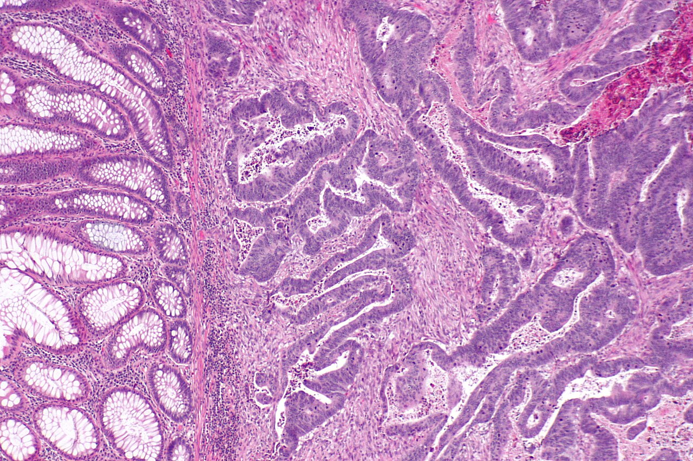
Od nálezu k pacientovi. Adenóm rastie roky, kým sa zvrhne – preto má zmysel kolonoskopia, pri ktorej sa polypy odstránia, a skríningový test krvi v stolici, ktorý ich prezradí. Pacient s FAP má stovky adenómov a karcinóm takmer istý; preventívne sa mu odstráni hrubé črevo.
10.6.2Iniciácia, promócia, progresia
Etapy onkogenézy sa ukázali v pokusoch na koži zvierat, ktoré sa najprv natreli látkou poškodzujúcou DNA a potom opakovane látkou, ktorá síce nemutuje, ale dráždi kožu k deleniu. Nádory vznikli len v tomto poradí; samotná druhá látka ich nevyvolala, a keď sa s ňou prestalo, ložiská prestali rásť. Odtiaľ tri etapy (Obr. 10.20):
| Etapa | Čo sa deje | Čo ju spôsobí | Je vratná? |
|---|---|---|---|
| iniciácia | v bunke vznikne trvalá zmena DNA, ktorá ju nezabije; bunka sa stáva „iniciovanou“, no vyzerá normálne | iniciátor = genotoxický kancerogén (reaguje s DNA), žiarenie, chyba replikácie | nie – mutácia ostáva v bunke a jej potomkoch |
| promócia | iniciované bunky sa delia rýchlejšie a tvoria klon; časť z nich zahynie; rast ešte závisí od promótora | promótor – sám nemutuje: hormóny (estrogény), chronický zápal, dráždenie, forbolové estery | áno – keď promótor prestane pôsobiť, klon prestane rásť a môže zaniknúť |
| progresia | v klone pribúdajú ďalšie mutácie, rast sa stáva autonómnym – z prednádorovej (preneoplastickej) zmeny je nádor | nestabilita genómu, selekcia subklonov | nie |
| zhubný nádor | nádor získa schopnosť prerastať do okolia a metastázovať | ďalšie subklony | nie |
Ľudské nádory toto poradie nemusia dodržať. Pri chronickom zápale sa bunky delia roky (promócia) skôr, než v niektorej z nich vznikne mutácia (iniciácia) – zápal zvyšuje šancu, že sa trafí do dôležitého génu, a kyslíkové radikály z neutrofilov a makrofágov DNA aj priamo poškodzujú (→ 5.9 Chronický zápal – keď poškodenie a oprava bežia naraz).
Hranica reverzibility onkogenézy leží medzi promóciou a progresiou. Mutácia z iniciácie sa vrátiť nedá, ale iniciovaná bunka bez promótora nádor nevytvorí. Preto má zmysel prestať fajčiť aj po rokoch, liečiť chronický zápal a vyrovnávať hormóny – a preto sa prekancerózy liečia, kým nie sú nádorom (→ 6.6 Čas, hranica reverzibility a osud adaptácií). Niektoré prehľady nazývajú vratnou už iniciáciu; myslia tým, že iniciovaná bunka sa ešte môže opraviť alebo zomrieť – kým sa nerozdelí.
Medzi pôsobením kancerogénu a zistením nádoru uplynie dlhá latencia – čas, kým klon prejde všetkými etapami a dorastie do veľkosti, ktorú zachytí lekár:
| Kancerogén | Nádor | Latencia |
|---|---|---|
| ionizujúce žiarenie (atómové bomby) | leukémie | 7–10 rokov |
| ionizujúce žiarenie | solídne nádory (štítna žľaza, prsník, pľúca) | desaťročia |
| vysokorizikový HPV | karcinóm krčka maternice | viac ako 10 rokov perzistujúcej infekcie |
| azbest | mezotelióm | 20–40 rokov |
10.6.3Znaky nádoru: čo bunka na konci tejto cesty vie
Nádory sú nespočetne rôzne, ale bunky zhubného nádoru majú na konci onkogenézy spoločné schopnosti. D. Hanahan a R. Weinberg ich v roku 2000 zhrnuli do zoznamu znakov nádoru (angl. hallmarks of cancer); každý znak môže bunka získať rôznymi mutáciami, ale získať ich musí:
| Znak | Ktorými génmi ho bunka získa | Domov v knihe |
|---|---|---|
| sama si udržiava signál k deleniu | onkogény (RAS, HER2, MYC) | → 10.5.2 |
| nereaguje na signály, ktoré delenie zastavujú | strata supresorov (RB, p16, TGF-β, kontaktná inhibícia cez APC/NF2) | → 10.5.3 |
| odoláva bunkovej smrti | strata p53, nadbytok BCL2 | → 1.4 |
| delí sa neobmedzene | telomeráza – predlžuje konce chromozómov (telomery), ktoré sa normálne s každým delením skracujú a po čase delenie zastavia | → 1.10 Starnutie bunky |
| vyvolá rast ciev (angiogenéza) | hypoxia v nádore → HIF-1α → VEGF | → 5.3 |
| prerastá do okolia a metastázuje | strata E-kadherínu, enzýmy rozkladajúce matrix | → 11.3, → 11.4 |
| mení si metabolizmus | glukózu štiepi na laktát aj pri dostatku kyslíka (Warburgov efekt) – rýchly zdroj ATP aj stavebných látok | — |
| uniká imunite | stratí antigény, vystaví na povrchu brzdiace molekuly (PD-L1) | — |
Dve vlastnosti nádor získanie znakov umožňujú: nestabilita genómu (→ 10.5.4) – dodáva mutácie – a zápal podporujúci nádor – zápalové bunky v stróme tvoria rastové faktory a radikály.
Kedysi (2000) znakov bolo šesť – prvých šesť v tabuľke. V roku 2011 pribudli dva (metabolizmus, únik pred imunitou) a dve umožňujúce vlastnosti (nestabilita genómu, zápal) – tak sa zoznam často uvádza ako „8 + 2“. Dnes (2022) sa k znakom pridáva fenotypová plasticita – schopnosť nádorovej bunky vrátiť sa do nezrelého stavu alebo zmeniť smer diferenciácie – a k umožňujúcim vlastnostiam nemutačné epigenetické zmeny a mikrobióm (baktérie čreva a iných slizníc, napríklad kmene E. coli s toxínom kolibaktínom, ktorý v bunkách hrubého čreva zanecháva typický vzor mutácií). Do mikroprostredia nádoru pribudli senescentné bunky, ktoré síce nedelia, ale tvoria látky podporujúce rast okolitých buniek.
- Eliminácia: imunita rozpozná nádorové bunky podľa nových antigénov (z mutovaných bielkovín a z vírusov) a väčšinu ich zničí – cytotoxické T-lymfocyty a NK bunky.
- Rovnováha: prežijú bunky, ktoré imunita nestihne zničiť; nádor dlho nerastie.
- Únik: selekcia uprednostní subklony, ktoré antigény stratili alebo vystavia PD-L1 – ten sa naviaže na PD-1 T-lymfocytu a vypne ho. Laktát z Warburgovho efektu okysľuje okolie a T-lymfocyty ďalej tlmí.
Znaky nádoru ako ciele liečby. Zo znakov nádoru vznikli celé skupiny liekov: inhibítory kináz (signál k deleniu), protilátky proti VEGF (angiogenéza), inhibítory kontrolných bodov imunity – protilátky proti PD-1, PD-L1 a CTLA-4, ktoré uvoľnia brzdu T-lymfocytov (únik pred imunitou). PD-L1 je teda brzda, ktorú vystavuje nádor; liekom je protilátka, ktorá ju zablokuje. Najlepšie zaberajú pri nádoroch s veľkým množstvom mutácií alebo s vysokým PD-L1 – melanóm, nemalobunkový karcinóm pľúc (o liečbe pomáha rozhodnúť podiel PD-L1-pozitívnych nádorových buniek v imunohistochémii), dlaždicové karcinómy hlavy a krku, uroteliálny karcinóm, klasický Hodgkinov lymfóm a nádory s mikrosatelitovou nestabilitou (→ 10.5.4) v ktoromkoľvek orgáne. Warburgov efekt využíva PET s rádioaktívne značenou glukózou (FDG): nádor ju vychytáva viac než okolie a „svieti“ – svieti však aj zápal.
10.7Čo nádor spúšťa: kancerogény a vnútorné faktory
Kancerogénom (karcinogénom) sa nazýva všetko, čo dokáže zhubný nádor vyvolať alebo jeho vzniku napomôcť – nielen látka, ale aj žiarenie, mikroorganizmus či celé pracovné prostredie, napríklad výroba v gumárni. Činitele sa delia podľa toho, odkiaľ pochádzajú: vonkajšie (chemické, fyzikálne, biologické) a vnútorné (vek, hormóny, dedičnosť, imunita). Všetky pôsobia tým, že poškodia DNA alebo podporia delenie buniek s už poškodenou DNA.
Kancerogén je iniciátor (poškodí DNA) alebo promótor (poháňa delenie). Vonkajší: chemický, fyzikálny (UV, ionizujúce žiarenie), biologický (vírusy, H. pylori, motolice). Vnútorné: vek, hormóny, dedičnosť, imunita. Príčin býva viac naraz.
Ktoré látky sú kancerogénne, hodnotí Medzinárodná agentúra pre výskum rakoviny (IARC). Hodnotí, nakoľko je istý dôkaz, že činiteľ nádory spôsobuje – nie to, aké silné je riziko:
| Skupina IARC | Význam | Príklady |
|---|---|---|
| 1 | karcinogénny pre človeka | tabakový dym, alkohol, azbest, arzén, aflatoxín B1, ionizujúce žiarenie, HPV 16 a 18, H. pylori, HBV, HCV |
| 2A | pravdepodobne karcinogénny – silné dôkazy u zvierat alebo z mechanizmu, slabšie u ľudí | červené mäso (spracované mäso je v skupine 1), nápoje teplejšie ako 65 °C, glyfosát |
| 2B | možno karcinogénny – obmedzené dôkazy | aflatoxín M1 (v mlieku zvierat, ktoré zjedli aflatoxín B1), aspartám |
| 3 | nedá sa zaradiť – dôkazy nestačia ani na jednu stranu | káva (do roku 2016 v skupine 2B), maté pité nie horúce |
Kedysi mala IARC aj skupinu 4 pre činitele, ktoré nádory u ľudí s veľkou pravdepodobnosťou nespôsobujú; takmer žiadna látka sa do nej nezaradila. Od roku 2019 (nová preambula monografií IARC) je zlúčená so skupinou 3, lebo IARC hodnotí len činitele, pri ktorých už nejaké podozrenie existuje. Pozor: zaradenie do skupiny 3 neznamená, že látka je bezpečná.
Nádory sa nedajú triediť podľa príčiny tak ako infekcie: príčina mnohých nádorov ostáva neznáma, jeden kancerogén vyvolá rôzne nádory (fajčenie spôsobuje karcinóm pľúc, močového mechúra aj hrtana), rovnaký nádor má rôzne príčiny, a príčina už nemusí pôsobiť, keď sa nádor zistí – podľa Willisovej definície rast pokračuje aj bez nej. Preto sa nádory triedia podľa tkaniva, nie podľa príčiny (→ 10.4).
Koľko nádorov je „smola“. Uvádza sa, že asi 5 % nádorov spôsobuje dedičnosť, asi 76 % chyby pri kopírovaní DNA nezávislé od prostredia („smola“, angl. bad luck) a asi 9 % prostredie. Doložené je iné rozdelenie, a nie nádorov, ale mutácií v nich: asi dve tretiny pochádzajú z chýb replikácie, necelá tretina z prostredia a asi 5 % je zdedených – a väčšina nádorov aj tak potrebuje viac mutácií, z ktorých aspoň jednu prostredie dodá. Preto sa dá predísť asi štyrom z desiatich prípadov rakoviny (odhad pre USA 42 %, pre Spojené kráľovstvo 38 %).
10.7.1Chemické kancerogény
Prvý doklad, že nádor môže spôsobiť látka z prostredia, priniesol v roku 1775 britský chirurg Percivall Pott: kominári ochorievali na karcinóm kože mieška oveľa častejšie než iní ľudia – od sadzí. Opatrenie, aby sa kominári denne umývali, výskyt výrazne znížilo. V rokoch 1915–1917 japonský patológ K. Yamagiwa vyvolal karcinóm kože králika opakovaným natieraním dechtom – prvý pokusný dôkaz. Chemické kancerogény sa delia podľa toho, či musia byť najprv premenené:
- priamo pôsobiace – samy sú elektrofilné (priťahuje ich miesto s nadbytkom elektrónov v DNA) a viažu sa na ňu kovalentnou väzbou; patria sem alkylačné látky, medzi nimi aj cytostatiká (cyklofosfamid, chlorambucil, deriváty nitrozomočoviny). Preto sa vzácne po rokoch až desaťročiach od chemoterapie alebo imunosupresívnej liečby objaví sekundárny nádor,
- nepriamo pôsobiace (prokancerogény) – samy sú nereaktívne; reaktívnymi sa stanú až po premene enzýmami pečene, najmä cytochrómom P450, ktorý má cudzie látky detoxikovať. Gény týchto enzýmov sú u ľudí rôzne (polymorfizmus) – preto rovnaká záťaž poškodí jedného viac než druhého.
pleseň Aspergillus flavus na zle skladovaných arašidoch a obilí → aflatoxín B1 → cytochróm P450 v pečeni ho premení na reaktívny 8,9-epoxid → epoxid sa naviaže na guanín → pri kopírovaní zámena G → T v kodóne 249 génu TP53 → p53 nefunguje → hepatocyty s poškodenou DNA sa delia → hepatocelulárny karcinóm
Vírus hepatitídy B pridá druhý zásah: jeho bielkovina HBx viaže a ruší p53. Kde sa obe záťaže stretnú (subsaharská Afrika, juhovýchodná Ázia), je HCC jedným z najčastejších nádorov.
Najdôležitejšie skupiny chemických kancerogénov a nádory, ktoré spôsobujú – miesto nádoru prezrádza, kde sa látka aktivuje alebo vylučuje:
| Skupina | Zdroj | Kde pôsobí → nádor |
|---|---|---|
| polycyklické aromatické uhľovodíky (benzo[a]pyrén, benzantracén) | spaľovanie organických látok – tabakový dym, decht, znečistený vzduch, údené mäso a ryby | v mieste styku → koža, sliznice, pľúca fajčiarov |
| aromatické amíny a azofarbivá (β-naftylamín, benzidín) | gumárenský priemysel, anilínové farbivá, kedysi aj farbivá potravín, tabakový dym | aktivujú sa v pečeni a vylučujú močom → močový mechúr |
| nitrozamíny | vznikajú z dusitanov, ktoré sa pridávajú do mäsových výrobkov; tabakový dym | pažerák, žalúdok |
| vinylchlorid | výroba PVC | premieňa sa v pečeni na epoxid → angiosarkóm pečene |
| aflatoxín B1 | plesnivé arašidy, obilie | pečeň → hepatocelulárny karcinóm |
| kovy (arzén, nikel, chróm, kadmium, berýlium) | priemysel, arzén v pitnej vode | arzén: koža, pľúca, močový mechúr, pečeň; nikel a chróm: pľúca |
| azbest | izolácie, stavebníctvo, lodenice | vlákna v pľúcach a pleure → mezotelióm, karcinóm pľúc |
| alkohol | etanol → acetaldehyd; u žien aj vyššie hladiny estrogénov | horné dýchacie a tráviace cesty (ústa, hltan, hrtan, pažerák), pečeň, hrubé črevo, prsník |
vdýchnuté tenké a dlhé vlákna (najmä krokydolit a amozit) → v tkanive sa nerozložia, dostanú sa až k pleure → makrofágy sa ich márne snažia pohltiť a uvoľňujú mediátory zápalu a kyslíkové radikály → opakovaný zápal pleury, poškodená DNA a narušené delenie mezotelových buniek → po 20–40 rokoch mezotelióm
V pľúcach sa vlákna obalia bielkovinou s obsahom železa – azbestové (železité) telieska: zlatohnedé paličky, často s rozšírenými koncami ako činka –, dôkaz expozície. Fajčenie riziko mezoteliómu nezvyšuje, ale s azbestom znásobí riziko karcinómu pľúc.
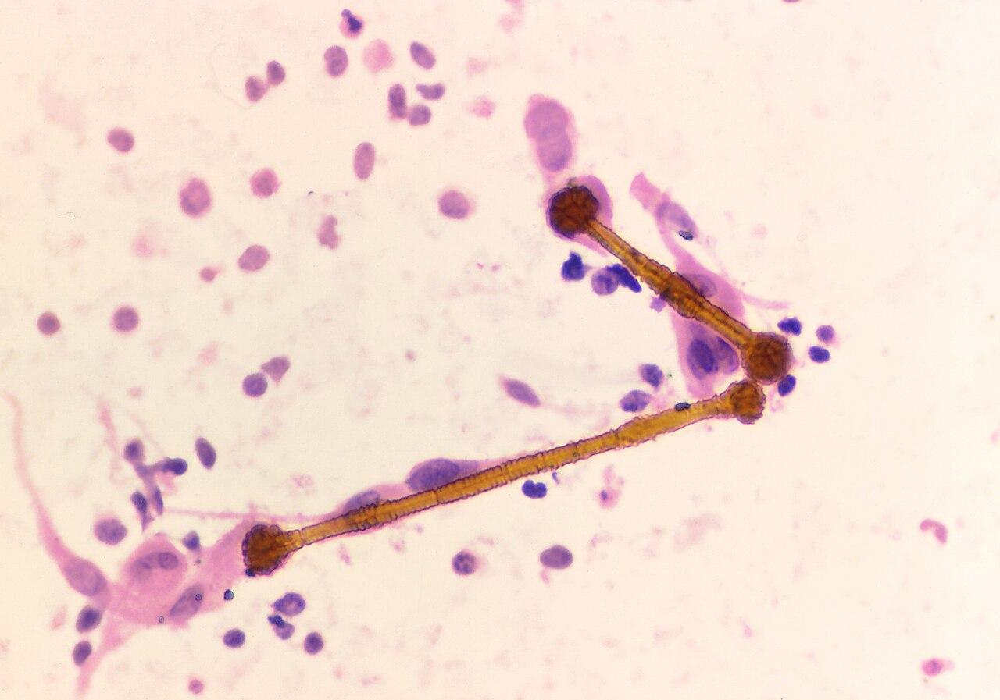
Nádor, ktorý sa hlási ako choroba z povolania. Pri mezotelióme, karcinóme pľúc u pracovníka s azbestom, angiosarkóme pečene u robotníka z výroby PVC alebo karcinóme močového mechúra u človeka z gumárne sa pýta na pracovnú anamnézu desaťročia dozadu – latencia je dlhá. Patológ v správe uvedie nález azbestových teliesok a fibrózy, rádiológ pleurálne pláty; z diagnózy plynie hlásenie choroby z povolania a odškodnenie.
10.7.2Fyzikálne kancerogény
Fyzikálne kancerogény sa delia na žiarenie – zďaleka najdôležitejšie – a na neradiačné vplyvy, ktorých význam je malý.
Ultrafialové (UV) žiarenie zo slnka, soláriových lámp a zváracieho oblúka preniká do kože len do hĺbky milimetrov, a preto poškodzuje len pokožku. Delí sa na tri pásma: UVA (315–400 nm), UVB (280–315 nm) a UVC (100–280 nm) podľa WHO; v dermatológii a v starších textoch sa hranica UVA a UVB kladie na 320 nm a dolná hranica UVC na 200 nm. Čím kratšia vlnová dĺžka, tým viac energie a mutácií: UVC je najsilnejšie, ale atmosféra – najmä ozón – ho celé pohltí, takže na zem nedopadne; z UVB prejde len menšia časť, UVA takmer celé. Kožné nádory spôsobuje hlavne UVB. Melanín v koži UV pohlcuje, a preto sú najviac ohrození ľudia so svetlou pokožkou v slnečných krajinách.
UVB pohltené DNA keratinocytu → dva susedné pyrimidíny (tymín, cytozín) sa spoja do diméru → reťazec DNA sa v tom mieste skriví → oprava excíziou nukleotidov (NER) úsek vystrihne a doplní → keď oprava nestíha alebo chýba (xeroderma pigmentosum), pri kopírovaní vznikajú mutácie TP53 a ďalších génov → dlaždicový (skvamocelulárny) a bazocelulárny karcinóm, melanóm
Dlaždicový a bazocelulárny karcinóm súvisia s celkovou dávkou UV za život (zasiahnuté sú tvár, uši, chrbty rúk), melanóm aj s opakovaným spálením. Neuroendokrinný karcinóm kože z Merkelových buniek vzniká z UV alebo – asi v 80 % – z polyomavírusu Merkelových buniek.
Ionizujúce žiarenie – röntgenové a γ-žiarenie, častice α a β, neutróny – má dosť energie, aby z atómov vyrazilo elektróny. Poškodzuje DNA dvoma spôsobmi: priamo (zlomy oboch vlákien, translokácie, delécie) a nepriamo – rozštiepi vodu na voľné radikály, ktoré DNA poškodia (→ 1.5.3 Reperfúzia a voľné radikály). Malú dávku dostáva každý z prirodzeného pozadia (horniny, radón, kozmické žiarenie). Riziko rastie s dávkou a pre ochranu pred žiarením sa predpokladá, že nemá prah – neexistuje dávka, ktorá by bola úplne bezpečná. Účinok závisí od druhu a dávky žiarenia, rozdelenia dávky v čase, veku (deti sú citlivejšie) a od tkaniva: najcitlivejšie je to, ktorého bunky sa delia – kostná dreň, štítna žľaza detí, prsník, pľúca; koža, kosť a tráviaca rúra sú voči nádorom zo žiarenia odolnejšie.
Ako vieme, že žiarenie nádory spôsobuje:
- Hirošima a Nagasaki – u preživších pribudli leukémie (najmä myeloidové) s latenciou 7–10 rokov, neskôr solídne nádory,
- Černobyľ (1986) – u preživších, najmä u tých, ktorí boli vtedy deťmi, pribudol karcinóm štítnej žľazy,
- baníci v uránových baniach – karcinóm pľúc z rádioaktívneho plynu radónu,
- prví rádiológovia a rádioterapeuti pred zavedením ochrany – zápal kože zo žiarenia a nádory kože,
- robotníčky natierajúce ciferníky rádiom (USA, 20. roky 20. storočia) – štetce olizovali, rádium sa ako vápnik ukladalo do kostí → osteosarkóm.
Ktoré nádory zo žiarenia sú zriedkavé. Na jednom mieste sa medzi najčastejšie nádory po ožiarení radí prsník a pľúca a zároveň sa karcinóm prsníka, pľúc a slinných žliaz uvádza ako menej častý. Doložené je, že prsník a pľúca patria medzi citlivé tkanivá; slinné žľazy ako osobitne zriedkavý nádor po ožiarení doložené nie sú.
Neradiačné fyzikálne vplyvy – dlhodobé mechanické dráždenie (žlčové kamene v žlčníku, kamene v močových cestách, zle sediaca zubná protéza), jazvy po popáleninách – sa s nádormi spájajú, ale dôkazy sú slabé; pôsobia skôr ako promótor cez chronický zápal a regeneráciu ako samostatná príčina.
Úraz nádor nespôsobí – len ho odhalí. Pacient s nádorom kosti alebo mäkkých tkanív často udáva, že „to začalo po úraze“: po kopnutí do predkolenia mu za pár dní navrela hrča. Nádor však rastie mesiace až roky; úraz vyvolá v jeho okolí opuch a krvácanie do nádoru, ten sa náhle zväčší a začne bolieť – a až vtedy si ho pacient všimne. Dôkaz, že by úraz nádor vyvolal, neexistuje.
10.7.3Biologické kancerogény
Asi 12 % všetkých zhubných nádorov na svete (2,3 milióna ročne) vyvolávajú infekcie – najviac Helicobacter pylori, potom ľudské papilomavírusy. Ľudské onkogénne vírusy bunku priamo nepremenia, ako to dokážu niektoré vírusy zvierat. Pôsobia tromi spôsobmi: vyvolajú delenie infikovaných buniek (zatiaľ polyklonálne, ale každé delenie je šanca na mutáciu), ich bielkoviny vyradia supresory (p53, RB) a zapnú telomerázu. Ostatné kroky musí dodať čas a ďalšie mutácie – preto z obrovského množstva nakazených ochorie na nádor len malá časť.
Prototypom je ľudský papilomavírus (HPV). Je to vírus s dvojvláknovou kruhovou DNA bez obalu a jeho cieľom sú najspodnejšie, deliace sa bunky viacvrstvového dlaždicového epitelu – v koži aj na slizniciach. Typov je dnes známych vyše 180 a drvivá väčšina z nich vyvolá nanajvýš nezhubný výrastok: nízkorizikové typy (najčastejšie 6 a 11) bradavice a kondylómy (condylomata acuminata). Vysokorizikové typy (najmä 16 a 18, ďalej 31, 33, 35, 45, 52, 58 a iné) spôsobujú prekancerózy a karcinómy krčka maternice, vulvy, vagíny, penisu, konečníka a orofaryngu (mandle, koreň jazyka). Prenášajú sa dotykom, najmä pohlavným stykom; riziko perzistujúcej infekcie stúpa so skorým začiatkom pohlavného života a s počtom partnerov.
- Integrácia: v nezhubnej lézii je DNA vírusu v jadre mimo chromozómov (epizóm); pri karcinóme sa vloží do DNA bunky – na rovnakom mieste vo všetkých nádorových bunkách, teda pred vznikom klonu.
- Integrácia preruší vírusový gén, ktorý brzdil vlastné gény E6 a E7 → ich bielkovín je nadbytok.
- E6 naviaže p53 a nechá ho odbúrať → bunka s poškodenou DNA nezastaví ani nezomrie; E6 zapne aj telomerázu.
- E7 naviaže RB → uvoľní E2F → bunka vstupuje do S-fázy stále.
- Bunka sa delí a hromadí mutácie; karcinóm vznikne až po rokoch perzistujúcej infekcie, keď pribudnú ďalšie zásahy (fajčenie, imunosupresia).
- MI: koilocyt (gr. koilos „dutý“) – dlaždicová bunka s väčším, tmavým, zvrásneným jadrom a so svetlým dvorcom okolo neho; dvorec vznikne, lebo vírus rozruší cytoskelet okolo jadra. Koilocyty sú znakom produktívnej infekcie (nízky stupeň lézie).
- V prekanceróze sa nezrelé bazálne bunky šíria do vyšších vrstiev epitelu (→ 15 Prekancerózy).
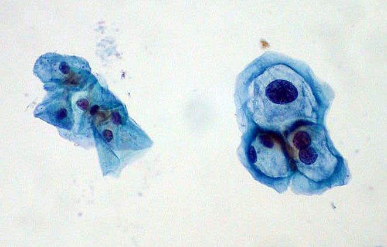
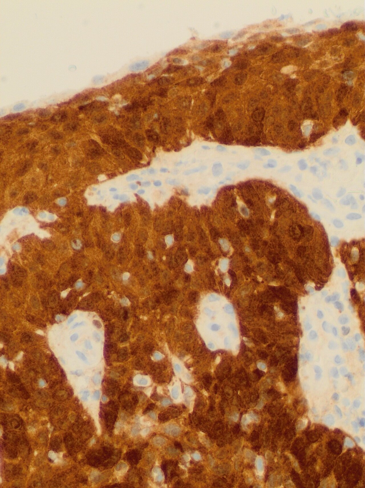
p16 ako stopa E7. Keď E7 vyradí RB, bunka sa snaží delenie zastaviť nadbytkom inhibítora CDK p16 – márne, lebo RB už nefunguje. Silné súvislé imunohistochemické farbenie na p16 v celej hrúbke epitelu je preto znakom transformujúcej infekcie vysokorizikovým HPV; HPV DNA sa dokáže PCR.
Od vírusu k skríningu a očkovaniu. Väčšina infekcií HPV sa do dvoch rokov vylieči sama; ohrozené sú ženy s infekciou, ktorá pretrváva. Preto skríning krčka maternice kombinuje cytológiu s testom na HPV (→ 10.8). Očkovanie dievčat pred začiatkom sexuálneho života znížilo vo Švédsku riziko invazívneho karcinómu krčka asi o 88 %. Za objav HPV v karcinóme krčka dostal H. zur Hausen Nobelovu cenu (2008).
Ostatné onkogénne pôvodcovia sa od HPV líšia hlavne tým, ktoré bunky infikujú – podľa toho, aký nádor vyvolajú:
| Pôvodca | Typ | Infikované bunky | Nádor | Čím sa líši od HPV |
|---|---|---|---|---|
| EBV (vírus Epsteinovej-Barrovej) | herpesvírus s DNA | hlavne B-lymfocyty; vstupuje cez epitel nosohltana | Burkittov lymfóm (v Afrike tam, kde je malária), Hodgkinov lymfóm, karcinóm nosohltana, lymfómy po transplantácii | nosí ho vyše 90 % dospelých; vírusový „receptor“ LMP1 udržiava B-lymfocyt aktivovaný a cez BCL2 ho chráni pred apoptózou; nádor vznikne až s ďalšou zmenou (pri Burkittovom lymfóme s translokáciou MYC) |
| HBV | DNA | pečeňové bunky | hepatocelulárny karcinóm | vírusová bielkovina HBx ruší p53; hlavnú prácu však robí roky trvajúci zápal a cirhóza |
| HCV | RNA | pečeňové bunky | hepatocelulárny karcinóm | do DNA bunky sa nevkladá – škodí len zápalom a cirhózou; za objav vírusu bola udelená Nobelova cena (2020) |
| HHV-8 (KSHV) | herpesvírus s DNA | endotel, B-lymfocyty | Kaposiho sarkóm – mnohopočetné (multifokálne) ložiská v koži a slizniciach –, niektoré lymfómy | prejaví sa najmä pri imunosupresii (AIDS, transplantácia); Kaposiho sarkóm nie je monoklonálny |
| HTLV-1 | RNA, retrovírus | CD4+ T-lymfocyty | T-bunková leukémia/lymfóm dospelých (asi 4 % nakazených, po desaťročiach) | jediný ľudský onkogénny retrovírus; nemá onkogén – jeho bielkovina Tax zapína gény pre rast lymfocytov; endemický v Japonsku a Karibiku; prenos dojčením, pohlavne, krvou |
| polyomavírus Merkelových buniek | DNA | bunky kože | karcinóm z Merkelových buniek | vírus sa klonálne vloží do DNA nádoru |
| Helicobacter pylori | baktéria | sliznica žalúdka | adenokarcinóm žalúdka, MALT lymfóm | pôsobí chronickým zápalom; IARC skupina 1 od 1994; spôsobuje aj chronickú gastritídu a vredy žalúdka a dvanástnika |
| Schistosoma haematobium | motolica | stena močového mechúra | dlaždicový karcinóm močového mechúra (Egypt, subsaharská Afrika) | vajíčka v stene vyvolajú chronický granulomatózny zápal a fibrózu; zápalové bunky tvoria radikály a vznikajú nitrozamíny |
| Opisthorchis viverrini, Clonorchis sinensis | motolice | žlčovody | cholangiokarcinóm (juhovýchodná Ázia) | chronický zápal žlčovodov |
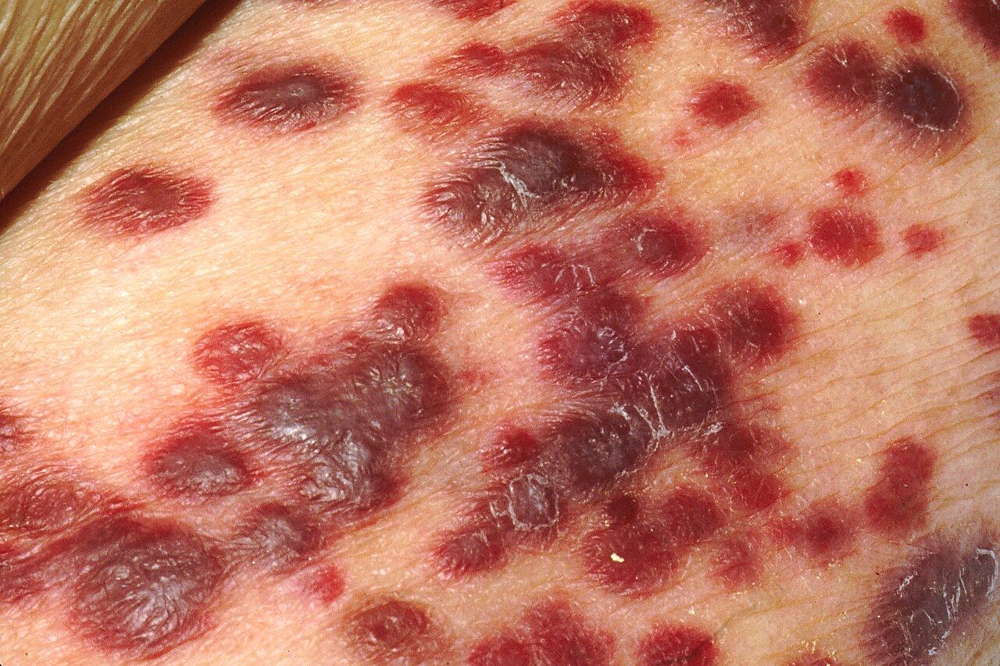
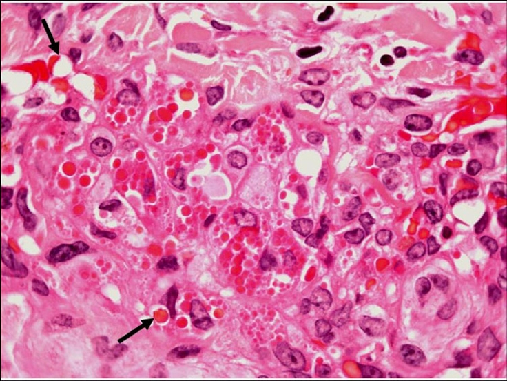
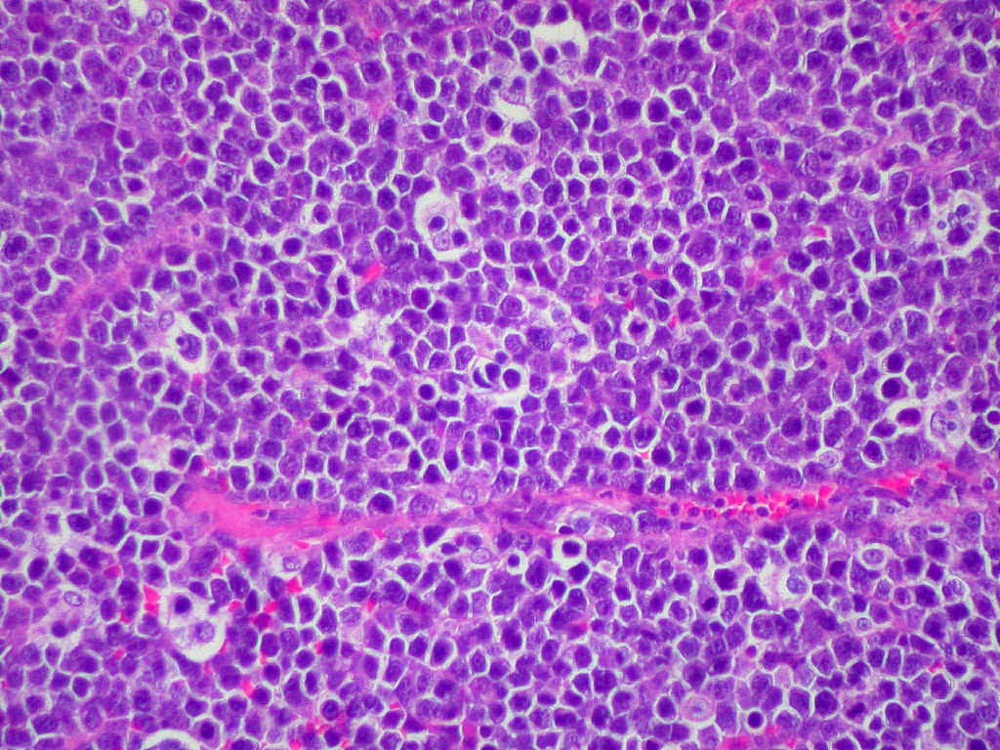
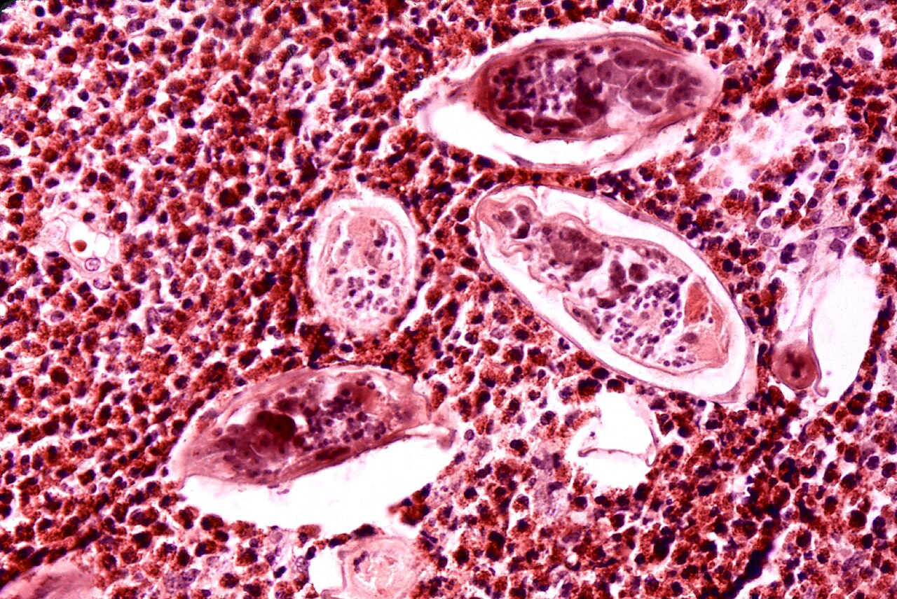
H. pylori v sliznici žalúdka → chronická gastritída s nahromadením lymfocytov a plazmatických buniek → v sliznici vznikne lymfatické tkanivo, ktoré tam normálne nie je (MALT, angl. mucosa-associated lymphoid tissue) → B-lymfocyty sa delia na trvalý antigénny podnet (zatiaľ polyklonálne) → mutácia v jednom z nich → monoklonálny MALT lymfóm, ktorý ešte závisí od podnetu
V časnom štádiu po vyliečení infekcie antibiotikami lymfóm často ustúpi – dôkaz, že rastie ešte v etape promócie (→ 10.6.2). Až keď získa ďalšie zmeny génov, ktoré trvalo zapnú signálnu dráhu NF-κB, rastie samostatne.
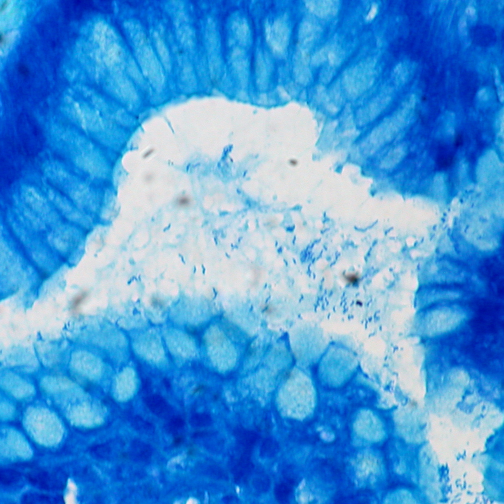
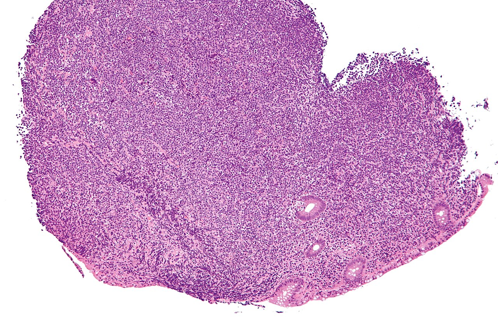
Ďalšie baktérie a lymfómy. Uvádza sa, že s lymfómami súvisia aj Campylobacter jejuni (imunoproliferatívna choroba tenkého čreva) a Borrelia burgdorferi (kožný lymfóm). Doložený je princíp – lymfóm z marginálnej zóny vzniká na trvalý antigénny podnet v rôznych orgánoch –, konkrétni pôvodcovia v prečítaných zdrojoch nie.
10.7.4Vnútorné faktory: vek, hormóny, dedičnosť, imunita
Vonkajšie kancerogény pôsobia na organizmus, ktorý sám rozhoduje, ako veľmi mu uškodia. Vnútorné faktory sa delia podľa toho, čo v organizme menia:
- vek – mutácie sa hromadia s počtom delení a s dĺžkou expozície kancerogénom a s vekom slabne imunita; výskyt väčšiny karcinómov s vekom stúpa. Niektoré nádory však majú vrchol v detstve (akútna lymfoblastová leukémia, blastómy) alebo u mladých dospelých (nádory semenníka),
- hormóny – nie sú iniciátormi, ale promótormi: poháňajú delenie v orgánoch, ktoré na ne odpovedajú (prsník, endometrium, prostata, štítna žľaza). Estrogény bez protiváhy progesterónu zvyšujú riziko karcinómu endometria a prsníka – pri skorej menarché a neskorej menopauze, hormonálnej substitúcii a obezite (tukové tkanivo premieňa androgény na estrogény, → 6.3.2 Prototyp hormonálnej hyperplázie: endometrium); každé tehotenstvo a dojčenie riziko znižuje. Hormonálna závislosť nádoru je zároveň cieľom liečby (blokátory estrogénových receptorov),
- dedičnosť – zárodočná mutácia v supresorovom alebo opravnom géne (→ 10.5.3, → 10.5.4); má ju asi 5–10 % pacientov s nádorom. Väčšina syndrómov sa dedí autozomálne dominantne. Najčastejšie sú dedičný karcinóm prsníka a vaječníka (BRCA1/2), Lynchov syndróm a FAP. Na dedičný syndróm upozorní nádor v mladom veku, viac nádorov u toho istého človeka a rovnaký nádor u viacerých príbuzných v niekoľkých generáciách,
- imunita – imunitný dozor ničí nádorové bunky a vírusy, ktoré nádory vyvolávajú (→ 10.6.3); pri imunosupresii (AIDS, lieky po transplantácii) pribúda najmä nádorov z vírusov – Kaposiho sarkóm, lymfómy z B-lymfocytov vyvolané vírusom EBV, karcinómy z HPV,
- chronický zápal – stojí na hranici vnútorného a vonkajšieho: sám je promótorom, ale spúšťa ho infekcia (H. pylori, HBV, HCV), autoimunita (ulcerózna kolitída, autoimunitná tyreoiditída), alebo dráždenie (refluxný žalúdočný obsah → Barrettov pažerák, → 6.4.3 Intestinálna metaplázia: Barrettov pažerák a žalúdok; dym → chronická bronchitída; alkohol → chronická pankreatitída). Najprv vzniká metaplázia, v nej dysplázia a z nej karcinóm.
Pečeň od zápalu po karcinóm – sprievodná choroba knihy. HBV, HCV, alkohol aj metabolická steatóza (→ 2.3.1) poškodzujú hepatocyty roky → hepatocyty sa delia, aby stratu nahradili, a pečeň sa prestavuje jazvami na cirhózu (→ 5.9) → v delení sa hromadia mutácie → hepatocelulárny karcinóm; 80–90 % HCC vzniká v cirhóze. Aflatoxín a HBV k tomu pridávajú priamy zásah do p53.
Nosiči mutácie – prevencia na mieru. Žena s mutáciou BRCA1/2 začína s vyšetreniami prsníkov od 20 rokov (ultrazvuk, od 25 rokov magnetická rezonancia, od 30 rokov aj mamografia) a zvažuje preventívne odstránenie prsníkov a vaječníkov; nosič Lynchovho syndrómu chodí na kolonoskopiu každý rok od 20 rokov. Patológ, ktorý v nádore nájde stratu MMR bielkovín alebo typický obraz, je často prvý, kto na dedičný syndróm upozorní.
10.8Kde sa dá zasiahnuť: prevencia a skríning
Onkogenéza trvá roky a väčšina jej etáp je ešte vratná alebo sa dá zachytiť, kým nádor je malý. Zásahy sa delia podľa toho, v ktorej etape deja pôsobia:
Primárna prevencia zabráni iniciácii a promócii (nefajčiť, očkovanie proti HPV a HBV, liečba H. pylori). Skríning hľadá prekancerózu alebo malý nádor u ľudí bez príznakov – v etape, keď sa dá vyliečiť.
- primárna prevencia – odstrániť kancerogén skôr, ako začne pôsobiť: nefajčiť, obmedziť alkohol, chrániť kožu pred slnkom, chrániť pracovníkov pred azbestom a žiarením, udržať telesnú hmotnosť; očkovanie proti HBV (v Taiwane po plošnom očkovaní z roku 1984 klesol výskyt HCC u detí) a proti HPV; eradikácia H. pylori,
- skríning – vyšetrenie ľudí bez príznakov, ktoré má nádor alebo jeho predstupeň nájsť v štádiu, keď sa ešte dá ľahko liečiť. Na Slovensku bežia tri organizované programy plne hradené zo zdravotného poistenia – karcinóm krčka maternice (cytológia, u starších žien test na HPV), kolorektálny karcinóm (test na skryté krvácanie v stolici, prípadne kolonoskopia) a karcinóm prsníka (mamografia); skríning karcinómu pľúc nízkodávkovým CT u fajčiarov a pilotný skríning karcinómu prostaty sa pripravujú,
- liečba prekanceróz – odstránenie adenómu, konizácia krčka maternice pri ťažkej dysplázii (→ 15 Prekancerózy).
Čo z toho má patológ. Skríning zaplaví patológiu malými vzorkami – cytológiou z krčka, polypmi z kolonoskopie, biopsiami z mamografie. Jeho úlohou je rozlíšiť nenádorovú zmenu, prekancerózu a karcinóm a pri karcinóme povedať, či je odstránený celý: od tohto rozhodnutia závisí, či pacient skončí s kontrolami, alebo pôjde na operáciu.
10.9Súhrn a rýchle rozlíšenie
Súhrn sleduje mapu kapitoly: čo je nádor, ako sa volá a z čoho je, čo sa pokazí v génoch, ako to postupuje v čase a čo to spúšťa.
| Otázka | Odpoveď v jednej vete | Kde |
|---|---|---|
| Čím sa nádor líši od hyperplázie? | Nádor rastie ďalej aj bez podnetu, lebo regulácia je pokazená v jeho génoch; je monoklonálny. | → 10.2 |
| Čo je nepravý nádor? | Hmota bez autonómneho rastu – zápal, hyperplázia, cysta, depozit, hamartóm, choristóm. | → 10.3 |
| Ako sa nádor pomenuje? | Podľa tkaniva pôvodu: papilóm/adenóm × karcinóm/adenokarcinóm; -óm × -sarkóm; -blastóm. | → 10.4 |
| Ktoré názvy klamú? | Lymfóm, melanóm, seminóm, mezotelióm sú zhubné; karcinoid = neuroendokrinný nádor. | → 10.4.3 |
| Čo robí onkogén? | Zapnutý gén (stačí jedna alela) vysiela signál k deleniu bez rastového faktora. | → 10.5.2 |
| Čo robí supresorový gén? | Zastavuje delenie a zabíja poškodené bunky; vypnúť treba obe alely (dva zásahy). | → 10.5.3 |
| Prečo je nestabilita genómu nebezpečná? | Urýchľuje vznik ostatných mutácií a sama sa posilňuje ⟳; bod zvratu je strata p53. | → 10.5.4 |
| Kde je hranica reverzibility? | Iniciácia je nevratná, promócia vratná – iniciovaná bunka bez promótora nádor nevytvorí. | → 10.6.2 |
| Čo spôsobuje nádory? | Chemické, fyzikálne a biologické kancerogény na pôde veku, hormónov, dedičnosti a imunity. | → 10.7 |
| Kde sa dá zasiahnuť? | Prevencia pred iniciáciou a promóciou, skríning v etape prekancerózy. | → 10.8 |
10.10Otázky na zopakovanie
Prečo hyperplázia endometria po vysadení estrogénov ustúpi, ale karcinóm endometria nie – hoci obe vznikajú pri nadbytku estrogénov?
Hyperplázia je polyklonálna odpoveď normálnych buniek na podnet; keď podnet zmizne, delenie sa zastaví. V karcinóme sa v jednej bunke nahromadili mutácie, ktoré delenie zapínajú a brzdy vypínajú; rast je autonómny a podnet už nepotrebuje. → 10.2.1 Dve poruchy rastu: regulácia zachovaná a regulácia stratenáV lymfatickej uzline sú zmnožené B-lymfocyty. Ako patológ rozhodne, či ide o reaktívnu zmenu, alebo o lymfóm, a prečo to funguje?
Každý B-lymfocyt má vlastnú prestavbu génu imunoglobulínu a dedí ju na potomkov. Reaktívna uzlina obsahuje mnoho klonov (polyklonálna, κ aj λ), lymfóm jeden klon – PCR nájde jednu prestavbu a imunohistochémia len jeden typ ľahkého reťazca. → 10.2.3 Klon a jeho potomkovia: monoklonalita a heterogenitaPrečo stačí zmeniť jednu alelu protoonkogénu, ale pri supresorovom géne treba obe?
Zmenená bielkovina onkogénu je aktívna stále a vysiela signál bez ohľadu na druhú, normálnu kópiu (zisk funkcie, dominantne). Supresor brzdí delenie aj jednou funkčnou kópiou; brzda vypadne až po strate oboch (recesívne, dva zásahy). → 10.5.3 Supresorové gény: gény, ktoré delenie zastavujúDieťa má retinoblastóm v oboch očiach a jeho otec mal v detstve odstránené oko. Prečo je u neho nádor obojstranný a čo mu hrozí neskôr?
Zdedilo jednu mutovanú alelu RB1, ktorá je v každej bunke; stačí jeden náhodný zásah v ktorejkoľvek bunke sietnice, preto vzniká viac nádorov v oboch očiach a skôr. Mutácia je aj v ostatných tkanivách – neskôr mu hrozí osteosarkóm a iné nádory. → 10.5.3 Supresorové gény: gény, ktoré delenie zastavujúPrečo pacientovi s karcinómom hrubého čreva a mutáciou KRAS nepomôže protilátka proti EGFR?
RAS leží v signálnej reťazi za receptorom EGFR. Mutovaný RAS je zapnutý sám a signál k deleniu vysiela, aj keď je receptor zablokovaný. → 10.5.2 Onkogény: gény, ktoré delenie spúšťajúPrečo sa po vyliečení infekcie H. pylori MALT lymfóm žalúdka často zmenší, ale adenokarcinóm žalúdka nie?
Časný MALT lymfóm rastie ešte na trvalý antigénny podnet baktérie – je v etape promócie, ktorá je vratná. Adenokarcinóm nahromadil mutácie, ktoré mu dali autonómiu (progresia), a podnet už nepotrebuje. → 10.7.3 Biologické kancerogényMuž, ktorý 30 rokov pracoval ako izolatér, má výpotok v pleure a pleura je zhrubnutá. Čo je najpravdepodobnejšie a prečo prišiel až teraz?
Mezotelióm z azbestu. Tenké vlákna makrofágy nestrávia, putujú k pleure a roky ju dráždia; kým klon prejde všetkými etapami onkogenézy, uplynie 20–40 rokov. V pľúcach sa dajú nájsť azbestové telieska. → 10.7.1 Chemické kancerogényPrečo vzniká hepatocelulárny karcinóm najmä v cirhotickej pečeni? Spoj s tým, čo vieš o regenerácii.
Hepatocyty sú stabilné bunky – pri strate sa delia (→ 5.2 Kto sa vie obnoviť: bunkový cyklus a kostra tkaniva). Pri chronickej hepatitíde odumierajú a dorastajú roky, takže každé delenie je šanca na mutáciu (zápal je promótor); radikály zo zápalu DNA aj priamo poškodzujú. → 10.7.4 Vnútorné faktory: vek, hormóny, dedičnosť, imunitaPrečo nádor so stratou p53 hromadí mutácie rýchlejšie a prečo sa to samo zhoršuje?
p53 pri poškodení DNA zastaví delenie a neopraviteľnú bunku pošle do apoptózy (→ 1.4 Apoptóza). Bez neho sa bunky s chybami delia ďalej; nové mutácie zasiahnu aj opravné gény a kontrolné body, a tak mutácie pribúdajú stále rýchlejšie ⟳. → 10.5.4 Opravné gény a nestabilita genómuŽena po kopnutí do predkolenia zistí za dva dni bolestivú hrču, v ktorej sa nájde sarkóm. Spôsobil ho úraz?
Nie. Nádor rástol mesiace až roky; úraz vyvolal opuch a krvácanie do nádoru, ktorý sa náhle zväčšil a začal bolieť. Žiadny doklad, že by úraz nádor vyvolal, neexistuje. → 10.7.2 Fyzikálne kancerogény
10.11Zdroje
- Zámečník J. a kol.: Patologie, 2. vyd., Praha: LD Prager Publishing, 2024 (kap. 11 Obecná onkologie, s. 171–220 – definícia, klonalita, etiológia, molekulová kancerogenéza, predispozície, pseudotumory a cysty; kap. 12 Klasifikace nádorů, s. 221–227; kap. 34 – karcinosarkóm; kap. 37 – stupne nádorov CNS). ISBN 978-80-11-04919-5.
- Zaviačič M. a kol.: Kompendium patológie, 1. diel: Všeobecná patológia a onkopatológia. Bratislava 2002 (kap. 10 Všeobecné onkologické pojmy – histologická skladba nádorov, organoidné a histoidné nádory; kap. 11 – teratómy, neuroblastóm).
- Hanahan D.: Hallmarks of Cancer: New Dimensions. Cancer Discov 2022;12(1):31–46. doi:10.1158/2159-8290.CD-21-1059 (abstrakt)
- Hanahan D., Weinberg R. A.: Hallmarks of cancer: the next generation. Cell 2011;144(5):646–674. doi:10.1016/j.cell.2011.02.013 (abstrakt)
- Samet J. M., Chiu W. A., Cogliano V. et al.: The IARC Monographs: Updated Procedures for Modern and Transparent Evidence Synthesis in Cancer Hazard Identification. J Natl Cancer Inst 2020;112(1):30–37. doi:10.1093/jnci/djz169
- Rindi G., Klimstra D. S., Abedi-Ardekani B. et al.: A common classification framework for neuroendocrine neoplasms: an IARC and WHO expert consensus proposal. Mod Pathol 2018;31(12):1770–1786. doi:10.1038/s41379-018-0110-y
- Bray F., Laversanne M., Sung H. et al.: Global cancer statistics 2022: GLOBOCAN estimates of incidence and mortality worldwide for 36 cancers in 185 countries. CA Cancer J Clin 2024;74:229–263. doi:10.3322/caac.21834 (abstrakt)
- WHO: Cancer – fact sheet. who.int
- Global Burden of Disease Cancer Collaboration: Global, Regional, and National Cancer Incidence, Mortality… 1990 to 2017. JAMA Oncol 2019;5(12):1749–1768. doi:10.1001/jamaoncol.2019.2996
- Rumgay H., Georges D., Huang Y. et al.: Global burden of cancer attributable to infections in 2024: a worldwide incidence analysis. Lancet Oncol 2026;27:1237–1248. doi:10.1016/S1470-2045(26)00307-400307-4)
- Tomasetti C., Li L., Vogelstein B.: Stem cell divisions, somatic mutations, cancer etiology, and cancer prevention. Science 2017;355:1330–1334. doi:10.1126/science.aaf9011 (abstrakt)
- Islami F., Goding Sauer A., Miller K. D. et al.: Proportion and number of cancer cases and deaths attributable to potentially modifiable risk factors in the United States. CA Cancer J Clin 2018;68:31–54. doi:10.3322/caac.21440 (abstrakt)
- Brown K. F., Rumgay H., Dunlop C. et al.: The fraction of cancer attributable to modifiable risk factors in England, Wales, Scotland, Northern Ireland, and the United Kingdom in 2015. Br J Cancer 2018;118:1130–1141. doi:10.1038/s41416-018-0029-6
- Nowell P. C.: The clonal evolution of tumor cell populations. Science 1976;194:23–28. doi:10.1126/science.959840 (abstrakt)
- Knudson A. G.: Mutation and cancer: statistical study of retinoblastoma. Proc Natl Acad Sci USA 1971;68:820–823. doi:10.1073/pnas.68.4.820 (abstrakt)
- Gerlinger M., Rowan A. J., Horswell S. et al.: Intratumor heterogeneity and branched evolution revealed by multiregion sequencing. N Engl J Med 2012;366:883–892. doi:10.1056/NEJMoa1113205 (abstrakt)
- Abegglen L. M., Caulin A. F., Chan A. et al.: Potential Mechanisms for Cancer Resistance in Elephants… JAMA 2015;314:1850–1860. doi:10.1001/jama.2015.13134 (abstrakt)
- Vazquez J. M., Sulak M., Chigurupati S., Lynch V. J.: A Zombie LIF Gene in Elephants Is Upregulated by TP53 to Induce Apoptosis in Response to DNA Damage. Cell Rep 2018;24:1765–1776. doi:10.1016/j.celrep.2018.07.042 (abstrakt)
- Calin G. A., Dumitru C. D., Shimizu M. et al.: Frequent deletions and down-regulation of micro-RNA genes miR15 and miR16 at 13q14 in chronic lymphocytic leukemia. Proc Natl Acad Sci USA 2002;99:15524–15529. doi:10.1073/pnas.242606799 (abstrakt)
- Ward R., Endicott M., Mallabar-Rimmer B. et al.: DNA methylation signatures of sporadic colorectal cancer with microsatellite instability. Epigenetics 2026;21:2711191. doi:10.1080/15592294.2026.2711191 (abstrakt)
- Pleguezuelos-Manzano C., Puschhof J., Rosendahl Huber A. et al.: Mutational signature in colorectal cancer caused by genotoxic pks+ E. coli. Nature 2020;580:269–273. doi:10.1038/s41586-020-2080-8 (abstrakt)
- Moreno-León C., Aguayo F.: Cooperation Between Aflatoxin-Induced p53 Aberrations and Hepatitis B Virus in Hepatocellular Carcinoma. J Xenobiot 2025;15:96. doi:10.3390/jox15040096
- Feng H., Shuda M., Chang Y., Moore P. S.: Clonal integration of a polyomavirus in human Merkel cell carcinoma. Science 2008;319:1096–1100. doi:10.1126/science.1152586 (abstrakt)
- Lei J., Ploner A., Elfström K. M. et al.: HPV Vaccination and the Risk of Invasive Cervical Cancer. N Engl J Med 2020;383:1340–1348. doi:10.1056/NEJMoa1917338 (abstrakt)
- Chang M. H., Chen C. J., Lai M. S. et al.: Universal hepatitis B vaccination in Taiwan and the incidence of hepatocellular carcinoma in children. N Engl J Med 1997;336:1855–1859. doi:10.1056/NEJM199706263362602 (abstrakt)
- Skafi M., Caserta S., Martino E. A. et al.: Extranodal Marginal Zone Lymphoma: Integrating Etiology, Microenvironment, and Genetics Into Clinical Decision-Making. Eur J Haematol 2026;117:849–863. doi:10.1111/ejh.70245
- Heneberg P.: From infection to cholangiocarcinoma: Why opisthorchiids break these rules. One Health 2026;23:101517. doi:10.1016/j.onehlt.2026.101517 (abstrakt)
- Ehab A., Benabdallah N., Yasin I. et al.: Inflammatory Myofibroblastic Tumor of the Central Airways: Case Report and Review. Case Rep Pulmonol 2026;2026:3123893. doi:10.1155/crpu/3123893 (abstrakt)
- Membrez T., Wilde J. C. H., Sanchez O. et al.: Regressive Neuroblastoma: Widely Accepted, Underreported Histology. Clin Case Rep 2026;14:e72640. doi:10.1002/ccr3.72640 (abstrakt)
- Walmsley C. S., Rodriguez A., Konstantinopoulos P. A. et al.: Expanding the therapeutic scope of PARP inhibitors in breast cancer. J Clin Invest 2026;136:e207632. doi:10.1172/jci207632 (abstrakt)
- Kumar V., Stewart J. H.: 25 Years of Cancer Immunoediting. Cancers (Basel) 2026;18:2672. doi:10.3390/cancers18162672 (abstrakt)
- Ministerstvo zdravotníctva SR: organizované skríningové programy (karcinóm krčka maternice, kolorektálny karcinóm, karcinóm prsníka; príprava skríningu pľúc a prostaty) – správy TASR, 2025–2026.
- StatPearls (NCBI Bookshelf; kapitoly čítané cez Europe PMC, stav 29. 10. 2026): Carcinogenesis · Tumor-Suppressor Genes · Hamartoma · Pulmonary Hamartoma · Cystic Teratoma · Testicular Teratoma · Burkitt Lymphoma · Chronic Myelogenous Leukemia · Neuroblastoma · Kaposi Sarcoma · Human Papillomavirus · Epstein-Barr Virus · Human T-Cell Lymphotropic Virus · Helicobacter Pylori · Malignant Mesothelioma · Hereditary Nonpolyposis Colon Cancer (Lynch Syndrome) · Xeroderma Pigmentosum · Li-Fraumeni Syndrome · Retinoblastoma · Familial Adenomatous Polyposis · Aflatoxin Toxicity · Cancer Screening · Schistosomiasis · Pleomorphic Adenoma · Gastrointestinal Neuroendocrine Tumors · Arsenic Toxicity · Desmoid Tumor · Hepatocellular Carcinoma · Wilms Tumor · Hydatidiform Mole
- Al Aboud D. M. a kol.: Pilar Cyst. In: StatPearls, 2023. NCBI Bookshelf NBK534209; Zito P. M., Scharf R.: Epidermoid Cyst. In: StatPearls, 2023. NBK499974 (vznik a stavba kožných cýst z folikulu).
- Flynn J. P., Gerriets V.: Pembrolizumab. In: StatPearls, 2023. NCBI Bookshelf NBK546616 (nádory, pri ktorých zaberajú inhibítory PD-1).
- Morledge-Hampton B. a kol.: Altered benzo[a]pyrene adduct formation in nucleosomes establishes distinct mutational patterns in lung cancer. J Biol Chem 2026;302:111291. DOI: 10.1016/j.jbc.2026.111291 (adukty BPDE).
- IARC: Press release No. 240 – IARC Monographs evaluate consumption of red meat and processed meat, 2015; Press release No. 244 – IARC Monographs evaluate drinking coffee, maté, and very hot beverages, 2016. https://www.iarc.who.int/
- Guyton K. Z. a kol.: Carcinogenicity of tetrachlorvinphos, parathion, malathion, diazinon, and glyphosate. Lancet Oncol 2015;16:490–491. DOI: 10.1016/S1470-2045(15)70134-8; Riboli E. a kol.: Carcinogenicity of aspartame, methyleugenol, and isoeugenol. Lancet Oncol 2023;24:848–850. DOI: 10.1016/S1470-2045(23)00341-8 (citované z abstraktu/zhrnutia).
Autor, licencia a odkaz na zdroj sú pri každom obrázku; súhrn je v registri ZDROJE-OBRAZKOV.md. Obr. 10.1, 10.14, 10.16, 10.18 a 10.20 sú vlastné schémy (CC BY-NC-SA 4.0).
Pokračuje v: → 11 Nádory II — dignita, grading, staging